| Akash Yaduwanshi (Roll: 24550306) | Team Leader |
| Ali Ahmad Raza Sheikh (Roll: 24550307) | Team Manager |
| Onkar Dubey (Roll: 24550342) | Frontend Developer |
| Krishnapal Singh Chawda (Roll: 24550330) | Frontend Developer |
| Pankaj Badoliya (Roll: 24550343) | Backend Developer |
| Anushruti Jain (Roll: 24550313) | Backend Developer |
| Mod Uwesh Khan Multani (Roll: 24550334) | Full Stack Developer |
This is to certify that the institutional internship report titled “Design and Implementation of PhantmOS: A Distributed AI Job Discovery and Resume-Synthesis Platform Using Self-Hosted Model Inference” has been successfully completed by the following student team during the academic session 2026–2027:
| # | Student Name | Enrollment No. | Roll No. | Project Role | Specialization Focus |
|---|---|---|---|---|---|
| 1 | Akash Yaduwanshi | DX2411135 | 24550306 | Team Leader | Core Architecture & Neural Inference |
| 2 | Ali Ahmad Raza Sheikh | DX2411140 | 24550307 | Team Manager | Cluster Infrastructure & Network Mesh |
| 3 | Onkar Dubey | DX2411458 | 24550342 | Frontend Developer | Frontend Architecture & UI/UX System |
| 4 | Krishnapal Singh Chawda | DX2411365 | 24550330 | Frontend Developer | Interactive Components & Telemetry UI |
| 5 | Pankaj Badoliya | DX2411464 | 24550343 | Backend Developer | Data Harvesting & Database Schemas |
| 6 | Anushruti Jain | DX2411187 | 24550313 | Backend Developer | FastAPI Microservices & PDF Factory |
| 7 | Mod Uwesh Khan Multani | DX2411408 | 24550334 | Full Stack Developer | Multi-Agent System & Telegram Bot |
Submitted in partial fulfillment of the curriculum requirements for the degree of Bachelor of Computer Applications (BCA), Semester V, at Government Holkar (Model Autonomous) Science College, Indore (M.P.).
The internship was carried out in two structured parts: Phase I (5 September – 10 October 2026) in the college computer lab working daily from 10:00 AM to 4:00 PM (6 hours per day) setting up the ClusterOS virtualization environment on physical workstations; and Phase II (11 October – 1 November 2026) through regular collaborative sessions on Google Meet developing the PhantmOS multi-agent platform, resume engine, and Telegram bot.
The students have completed more than 90 hours of required training, clocking a total of 270 documented hours (150 hours in the college lab and 120 hours in remote collaborative engineering at 6 hours per day). The report has been examined and approved for semester evaluation.
We, the undersigned students of Bachelor of Computer Applications (BCA), Semester V, Government Holkar (Model Autonomous) Science College, Indore, declare that this institutional internship report titled “Design and Implementation of PhantmOS: A Distributed AI Job Discovery and Resume-Synthesis Platform Using Self-Hosted Model Inference” is an authentic and original record of our work. We completed this internship between 5 September 2026 and 1 November 2026 under the guidance of our project mentor Prof. Manish Singh and Head of Department Dr. Pradeep Sharma.
Our work was carried out across two practical phases: Phase I (5 Sep – 10 Oct 2026) in the college computer lab working daily from 10:00 AM to 4:00 PM (6 hours per day), where we configured three HP desktop computers into a local cluster called ClusterOS using Linux KVM, libvirt, and WireGuard to host AI models locally; and Phase II (11 Oct – 1 Nov 2026) through daily online meetings on Google Meet (6 hours per day), where we engineered the PhantmOS multi-agent platform, Typst resume builder, and Telegram bot.
Internship Hours Completed: As required by the curriculum, each member of our team completed more than 90 hours of mandatory practical training. In total, our team logged 270 documented working hours across the 8-week internship period (comprising 150 hours of on-campus laboratory clustering in Phase I, and 120 hours of collaborative software development in Phase II).
We also confirm that this work is original and has not been submitted previously for any other degree or diploma at this or any other academic institution.
|
Akash Yaduwanshi
Team Leader • Roll: 24550306 • Enr: DX2411135 |
Ali Ahmad Raza Sheikh
Team Manager • Roll: 24550307 • Enr: DX2411140 |
|
Onkar Dubey
Frontend Developer • Roll: 24550342 • Enr: DX2411458 |
Krishnapal Singh Chawda
Frontend Developer • Roll: 24550330 • Enr: DX2411365 |
|
Pankaj Badoliya
Backend Developer • Roll: 24550343 • Enr: DX2411464 |
Anushruti Jain
Backend Developer • Roll: 24550313 • Enr: DX2411187 |
|
Mod Uwesh Khan Multani
Full Stack Developer • Roll: 24550334 • Enr: DX2411408 |
|
We express our sincere thanks to Dr. Pradeep Sharma, Professor & Head of Department of Computer Science & IT, for granting us permission to use the college computer lab and hardware workstations. His administrative approval and guidance made it possible for us to build and test our physical virtualization cluster during Phase I.
We are deeply grateful to our project mentor, Prof. Manish Singh, for his continuous technical guidance, helpful feedback, and encouragement throughout the design and implementation of both ClusterOS and PhantmOS.
This report represents the teamwork of our seven-member cohort across both phases of our internship: working daily in the college lab from 10:00 AM to 4:00 PM (6 hours per day) during Phase I, and collaborating daily over Google Meet (6 hours per day) during Phase II. Every member contributed actively to their assigned areas:
We also thank the open-source community behind Linux, KVM, WireGuard, FastAPI, React, and Supabase for providing the dependable tools that made this work possible.
Finding entry-level software jobs and internships is challenging for undergraduate students. Most commercial job boards use generic keyword search that fails to match a candidate's actual coursework and skills, while automated Applicant Tracking Systems (ATS) silently reject resumes if formatting or keywords do not match. At the same time, using commercial cloud AI tools for every resume and search query introduces recurring subscription costs and exposes private student resume data to external services.
This report presents PhantmOS, an automated platform designed to simplify the student job search. PhantmOS combines an interactive web interface with a self-hosted three-node Linux cluster called ClusterOS. The platform harvests job postings from platforms like Arbeitnow, Remotive, and Google Serp API, uses AI embeddings (BGE-small-en-v1.5) and BM25 search to find relevant openings, ranks them using an attention-based reranker (bge-reranker-base), and creates truthful, ATS-optimized resumes using Typst. It also delivers instant job alerts to the student's mobile device via Telegram.
To keep the project free to run, AI models run locally on three HP laboratory computers (Intel Core i5-10210U, 8 GB RAM per host, 24 GB aggregate cluster fabric) running Ubuntu 24.04 connected through a secure WireGuard network. In benchmark tests, local inference delivered response times under 70 milliseconds, providing fast search results with zero cloud subscription fees and complete student data privacy.
| Certificate of Approval | 2 | |
| Student Declaration | 3 | |
| Acknowledgement | 4 | |
| Abstract | 5 | |
| List of Figures | 9 | |
| List of Tables | 10 | |
| List of Abbreviations and Acronyms | 11 | |
| 1. INTRODUCTION: Problem Background & Motivation | 12 | |
| 1.3 Project Aim & Engineering Objectives | 13 | |
| 1.5 Scope, Delimitations & Institutional Significance | 14 | |
| 1.7 Project Genesis, Phased Development & Team Synergy | 15 | |
| 2. OBJECTIVES, REQUIREMENTS & METHODOLOGY: Functional Matrix | 16 | |
| 2.2 Non-Functional Requirements & Performance SLA Benchmarks | 17 | |
| 2.3 Engineering Methodology & Evaluation Framework | 18 | |
| 2.5 Engineering Team Structure & Technical Workload Distribution | 19 | |
| 3. TECHNICAL BACKGROUND: Virtualisation Infrastructure & Mesh | 20 | |
| 3.4 BM25, Reciprocal Rank Fusion & Cross-Encoder Reranking | 21 | |
| 3.5 Docker Containerisation & Hugging Face Spaces Deployment | 22 | |
| 4. INTEGRATED SYSTEM ARCHITECTURE: Deployment Topology & Stack | 23 | |
| 4.3 End-to-End Autonomous Data Flow Pipeline | 24 | |
| 4.4 Integration Boundary: Cloud Space & Physical Cluster Mesh | 25 | |
| 4.5 Implementation Languages, Libraries & Software Stack | 26 |
| 5. VIRTUALISATION CLUSTER: Physical Environment & VM Sizing | 29 | |
| 5.3 Mesh Network Topology & Point-to-Point Routing | 30 | |
| 5.4 Implementation of the Virtualisation Environment | 31 | |
| 5.5 Model-Serving Microservices Architecture | 32 | |
| 5.6 Remote Administration & Out-of-Band Cluster Control | 33 | |
| 5.7 Infrastructure Constraints & Hardware Mitigations | 34 | |
| 6. PHANTMOS APPLICATION DESIGN: Multi-Agent Architecture | 35 | |
| 6.2 Automated Job Discovery & Multi-Stage Hybrid Retrieval | 36 | |
| 6.4 Composite Relevance Scoring & Classification Thresholds | 38 | |
| 6.5 Resume Synthesis & ATS Document Generation | 39 | |
| 6.6 Data Persistence, Caching & Frontend Student Workflow | 41 | |
| 6.8 Telegram Bot Command-and-Control & Mobile Job Radar | 43 | |
| 7. DOCKER DEPLOYMENT: Containerisation & Cloud Space Ingress | 44 | |
| 7.3 OpenAPI Service Contract & Schema Specifications | 45 | |
| 7.4 Operational Cost & Student Concurrency Capacity | 46 | |
| 8. TESTING, RESULTS & DISCUSSION: Infrastructure Verification | 47 | |
| 8.2 Model Serving Latency & Neural Retrieval Benchmarks | 48 | |
| 8.3 Static Analysis, Type Safety & Integration Test Suite | 49 | |
| 8.5 Results Discussion, Verification Evidence & Findings | 50 |
| 9. SECURITY, RELIABILITY & LIMITATIONS: Multi-Tenant Isolation | 52 | |
| 9.5 Priority Security Findings, Remediations & Limitations | 53 | |
| 10. FUTURE ENHANCEMENTS: Model Scaling & Campus Rollout | 54 | |
| 11. CONCLUSION | 55 | |
| REFERENCES | 56 | |
| APPENDIX A. INFRASTRUCTURE INVENTORY | 58 | |
| APPENDIX B. INTEGRATION VERIFICATION PLAN & LOGS | 59 | |
| APPENDIX C. RECOMMENDED OPERATIONAL COMMANDS | 60 | |
| C.3 Model Microservices REST API Diagnostic Commands | 61 |
| Figure 1. Bi-Encoder Semantic Search vs. Cross-Encoder Deep Attention Architecture | 22 | |
| Figure 2. Integrated PhantmOS System Architecture and Deployment Topology | 23 | |
| Figure 3. End-to-End Autonomous Job Discovery and Application Flow | 25 | |
| Figure 4. PhantmOS Production Web Dashboard (Home Overview & Live Matches) | 26 | |
| Figure 4B. PhantmOS Job Discovery Engine Interface | 36 | |
| Figure 5. Three-Node Physical Cluster and Routed VM Network Topology | 31 | |
| Figure 6. Virtualisation Cluster Implementation, Mesh Routing, and Subnet Architecture | 31 | |
| Figure 6B. ClusterOS KVM / Libvirt Control Center & Compute Fabric Interface | 32 | |
| Figure 6C. ClusterOS Virtual Machines Matrix & Host Orchestration Control Center | 33 | |
| Figure 7. Physical Cluster Linux Terminal Monitoring Console (Ubuntu 24.04 CLI) | 34 | |
| Figure 8. Multi-Stage Hybrid Retrieval and Cross-Encoder Reranking Pipeline | 36 | |
| Figure 8B. PhantmOS Multi-Agent Autonomous Pipeline Workflow | 38 | |
| Figure 9. Composite Relevance Scoring Flow and Classification Threshold Bands | 38 | |
| Figure 10. Multi-Provider LLM Fallback Chain for Resume Synthesis & PDF Generation | 40 | |
| Figure 10B. PhantmOS Command Center & System Preferences | 41 | |
| Figure 11. Live ATS Resume Synthesizer & Competency Matcher Interface | 42 | |
| Figure 11B. PhantmOS Company Intelligence Interface | 41 | |
| Figure 12. Container Deployment Topology on Hugging Face Spaces Platform | 44 | |
| Figure 13. Hugging Face Spaces Deployment Topology and External Service Boundaries | 45 | |
| Figure 14. FastAPI Microservices OpenAPI Interactive Documentation UI (Swagger /docs) | 46 | |
| Figure 15. Physical Cluster Inference Telemetry & Latency Dashboard (Grafana Telemetry) | 48 | |
| Figure 16. System Integration, Unit Testing, and Infrastructure Verification Workflow | 50 |
| Table 1. Functional Requirements Matrix | 16 | |
| Table 2. Non-Functional Engineering Constraints and Service-Level Targets | 17 | |
| Table 2B. Seven-Member Engineering Team Role and Technical Responsibilities | 19 | |
| Table 3. Core Architectural Subsystems and Allocation | 23 | |
| Table 3B. Implementation Languages Across the PhantmOS System | 26 | |
| Table 3C. Core Frameworks, Libraries, and Production Dependencies | 26 | |
| Table 4. Physical Host Specifications across Laboratory Test Cluster | 29 | |
| Table 5. Virtual Machine Allocation and Role Assignment | 29 | |
| Table 6. Cross-Node Routed Subnets and Addressing | 30 | |
| Table 7. Composite Scoring Formula Weights and Tuning Parameters | 38 | |
| Table 8. Recorded Infrastructure Verification Tests and Concrete Outcomes | 47 | |
| Table 8B. Empirical Model-Serving and Retrieval Latency Benchmarks | 48 | |
| Table 9. Recorded Static Analysis, Unit Testing, and Type Safety Results | 49 | |
| Table 10. End-to-End Integration Test Matrix and Execution Outcomes | 49 | |
| Table 11. Priority Security Findings and Implemented Remediations | 52 | |
| Table 12. Complete Laboratory Cluster Infrastructure Inventory | 58 | |
| Table 13. System Release Verification Execution Audit Record | 59 |
| API | Application Programming Interface | |
| ATS | Applicant Tracking System | |
| BCA | Bachelor of Computer Applications | |
| BGE | BAAI General Embedding (Beijing Academy of Artificial Intelligence) | |
| BM25 | Best Matching 25 (Probabilistic Information Retrieval Ranking Function) | |
| CLI | Command Line Interface | |
| CPU | Central Processing Unit | |
| DHCP | Dynamic Host Configuration Protocol | |
| HTTP / HTTPS | Hypertext Transfer Protocol / Secure | |
| ICMP | Internet Control Message Protocol | |
| IP | Internet Protocol | |
| JWT | JSON Web Token | |
| KVM | Kernel-based Virtual Machine | |
| LAN | Local Area Network | |
| LLM | Large Language Model | |
| NAT | Network Address Translation | |
| QEMU | Quick Emulator | |
| RLS | Row-Level Security | |
| RRF | Reciprocal Rank Fusion | |
| RTT | Round-Trip Time | |
| SLA | Service Level Agreement | |
| SSH | Secure Shell | |
| STAR | Situation, Task, Action, Result (Behavioral Interview Framework) | |
| UI / UX | User Interface / User Experience | |
| vCPU | Virtual Central Processing Unit | |
| VM | Virtual Machine |
Securing an entry-level software engineering role or technical internship has evolved into an challenging and stressful process for undergraduate students. A typical computer applications student spends dozens of hours each week navigating conventional career portals—predominantly LinkedIn, Indeed, and disparate employer boards. However, rather than providing targeted opportunities, commercial platforms rely on coarse keyword matches and opaque algorithms designed to maximize impressions rather than relevance. Consequently, applicants are inundated with algorithmic spam, "ghost" postings, and automated Applicant Tracking System (ATS) screening walls that silently reject upwards of 75% of submissions within seconds due to minor lexical mismatches or non-standard formatting.
Overcoming this screening barrier manually requires students to read job descriptions, find required skills, tailor resume points using the STAR (Situation, Task, Action, Result) methodology, and draft customized correspondence—an exhausting workflow demanding 90 to 120 minutes per application. Furthermore, while modern cloud AI services offer drafting capabilities, relying on commercial proprietary APIs introduces steep per-query subscription fees, risks student data exposure, and creates vendor lock-in. Recognizing this common difficulties firsthand, our seven-member undergraduate engineering cohort undertook an institutional curriculum internship sanctioned by Government Holkar (Model Autonomous) Science College, Indore, spanning from 5 September 2026 to 1 November 2026 (encompassing 270 hrs of documented engineering work).
Our objective was to engineer PhantmOS—an autonomous, distributed career automation platform that simplifies the traditional job search process. Rather than forcing the candidate to hunt for jobs and tailor documents manually, PhantmOS continuously harvests verified openings across multiple remote sources, performs deep bi-encoder semantic embedding and cross-encoder attention reranking, dynamically synthesizes ATS-optimized resumes via next-generation Typst compilation, and delivers real-time notifications to the candidate's mobile device via Telegram. To achieve absolute cost sustainability and data sovereignty, the platform leverages ClusterOS—a dedicated, three-node bare-metal virtualization cluster built inside the college computer lab that self-hosts neural inference microservices at zero cloud operational expense.
Modern job seekers and university graduates face a four-fold engineering and procedural crisis when navigating employment markets:
Unchecked Algorithmic Noise and Resume Mismatch on Legacy Boards: Commercial portals like LinkedIn and Indeed treat job listings as commercial inventory. They rely on coarse keyword matches that fail to evaluate deep semantic equivalence between a student's resume and a job description. Students receive recommendations for senior architect roles or irrelevant non-technical sales positions, wasting valuable preparation time.
The Opaque ATS Screening Wall and Keyword Filtering: Applicant Tracking Systems discard upwards of 75% of candidate submissions before a human recruiter conducts a visual inspection. Resumes formatted in two-column layouts, containing non-standard Unicode glyphs, or lacking specific lexical tokens present in the job description are automatically assigned low relevancy scores. Without role-specific semantic keyword alignment, students face near-universal silent rejection.
Severe Application Burnout and Workflow Fragmentation: Finding a job requires operating across four disconnected environments: job boards for searching, document editors for manual resume tailoring, email clients for outreach, and spreadsheets for tracking. Manually customizing bullet points to reflect individual employer requirements takes up to 2 hours per role. This high friction drastically lowers application velocity and accelerates candidate discouragement.
Prohibitive Cloud Inferencing Costs and Student Data Exposure: Deploying state-of-the-art neural information retrieval (such as dense vector embeddings and cross-encoder token reranking) on commercial cloud inference APIs incurs severe per-token costs ($0.02 to $0.10 per evaluated lead) and exposes sensitive student CVs to third-party commercial data brokers. Educational institutions require a low-cost local computer lab setup.
Solving these interconnected problems requires engineering an end-to-end autonomous operating system that marries private on-premises virtualization infrastructure with an intelligent multi-agent pipeline capable of automated harvesting, semantic matching, truthful STAR resume synthesis, and instant mobile-first delivery.
The primary aim of this project is to design, implement, and validate PhantmOS - a distributed, AI-assisted job discovery and resume-synthesis platform that links a containerized web portal on Hugging Face Spaces with a self-managed, three-node Linux virtualization cluster dedicated to low-latency neural embedding and cross-encoder reranking inference.
To accomplish this aim, we established eight practical engineering objectives:
Develop Automated Ingestion Connectors: Build modular scrapers to harvest job listings from Arbeitnow, Remotive, Google Serp API, and multiple different sources, with automated HTML cleaning, salary field standardization, and SHA-256 deduplication.
Implement a Hybrid Information Retrieval Pipeline: Combine dense vector embeddings (BAAI/bge-small-en-v1.5) with BM25 lexical keyword scoring, merging results through Reciprocal Rank Fusion (RRF) to capture both semantic context and technical keyword overlap.
Deploy Cross-Encoder Reranking: Run BAAI/bge-reranker-base to evaluate deep query-candidate cross-attention over the top-50 retrieved opportunities, providing accurate relevance scores between 0.0 and 1.0.
Provision a Three-Node KVM/QEMU Virtualization Cluster: Configure three Ubuntu physical machines using KVM, QEMU, and libvirt to run dedicated virtual machines with stable CPU and memory allocations.
Establish Secure Inter-Node Mesh Networking: Configure a peer-to-peer WireGuard VPN mesh across physical hosts and establish persistent IP forwarding between guest subnets to allow seamless cross-node API calls.
Package and Deploy the Web Application: Containerize the FastAPI backend and React frontend into a lightweight Docker image deployed to Hugging Face Spaces for zero-setup student web access.
Build an ATS Resume Synthesis Studio: Create an on-demand resume tailoring engine with a resilient multi-provider LLM cascade (Groq -> Google Gemini -> Hugging Face) and automated RenderCV and Typst PDF document compilation.
Verify System Performance and Security: Empirically test end-to-end latency, model throughput, network routing stability, and database Row-Level Security (RLS) data isolation.
The project scope encompasses both physical infrastructure and software engineering:
Infrastructure Scope: Three physical HP 200 Pro G4 All-in-One Ubuntu computers, three libvirt KVM virtual machines (2 vCPU, 4 GB RAM each), routed virtual subnets (10.60.1.0/24, 10.60.2.0/24, 10.60.3.0/24), WireGuard mesh tunneling (10.50.0.0/24), and remote management via SSH ProxyJump.
Application Scope: Source ingestion adapters, hybrid vector-lexical search algorithms, cross-encoder reranking microservices, composite scoring logic, multi-tier LLM tailoring fallbacks, RenderCV and Typst PDF rendering, Supabase PostgreSQL persistence with Row-Level Security, and a responsive React 19 / TypeScript / TanStack Start student dashboard.
Project Delimitations: The system is designed for job discovery, relevance matching, and resume document preparation; it does not feature an autonomous bot that blindly submits applications to external career websites without student review. Furthermore, the virtualization cluster focuses on cost-effective local compute rather than enterprise-grade features such as live VM migration, automated multi-master failover, or shared SAN storage arrays.
PhantmOS provides a clear, practical blueprint for educational institutions, student developers, and resource-conscious teams aiming to deploy cutting-edge AI systems without paying commercial API bills. By proving that commodity laboratory computers can be transformed into a reliable, self-hosted inference cluster via open-source tools (KVM, WireGuard, libvirt), this project bridges the gap between modern cloud web applications and private, low-cost distributed computing.
The engineering of ClusterOS and PhantmOS was conducted as a sanctioned institutional curriculum internship by Govt. Holkar (Model Autonomous) Science College, Indore, running from 5 September 2026 to 1 November 2026. The university curriculum mandates more than 90 hours of practical work; in total, our seven-member student team logged 270 documented working hours across two operational phases:
Phase I: 5 September 2026 – 10 October 2026 — In-Lab Physical Infrastructure & Cluster OS Virtualization: Conducted entirely on-campus within the college computer laboratory, with the team working in-person every day from 10:00 AM to 4:00 PM (6 hours per day, logging 150 hours). The team inspected and repurposed three bare-metal HP 200 Pro G4 All-in-One desktop workstations running Ubuntu Linux. Using Linux Kernel-based Virtual Machines (KVM), QEMU emulation, and the libvirt hypervisor daemon, we provisioned isolated virtual machines (vm-p1-test, vm-p2-test, vm-p3) with dedicated vCPU and RAM allocations. To interconnect these nodes across isolated subnets (10.60.1.0/24, 10.60.2.0/24, 10.60.3.0/24), we configured an encrypted peer-to-peer WireGuard mesh network (10.50.0.0/24), achieving an ultra-low inter-node transit latency of 0.36 ms. We deployed self-hosted FastAPI microservices serving BGE-small-en-v1.5 embeddings and BAAI/bge-reranker-base cross-encoders. This on-premises virtualization infrastructure constituted our foundational Cluster OS, guaranteeing zero recurring inference costs and total data privacy.
Phase II: 11 October 2026 – 1 November 2026 — Remote Collaborative Multi-Agent & Telegram C2 Engineering via Google Meet: Having secured a cost-free private inference backplane, the team shifted to an intensive remote agile workflow. All seven members connected daily via Google Meet for 6 hours per day (logging 120 hours) for synchronous architecture reviews, pair programming, and integration testing. Over these weeks, the team engineered PhantmOS: developing eight specialized autonomous agents (Discovery, Ranking, Research, Resume Synthesis, ATS Verification, PDF Factory, Telegram Delivery, and Feedback), wiring a resilient LLM waterfall (Gemini 2.5 Flash → Groq LLaMA 3.3 70B → Hugging Face), integrating the Typst document compiler backend, crafting a reactive React 19/TanStack Start dark-mode web dashboard, and implementing an interactive Telegram bot command-and-control center with 3-button instant mobile actions. System auditing and integration verification concluded Phase II operations.
Every member of our seven-student cohort—Ali Ahmad Raza Sheikh, Akash Yaduwanshi, Onkar Dubey, Krishnapal Singh Chawda, Pankaj Badoliya, Anushruti Jain, and Mod Uwesh Khan Multani—demonstrated dedication, teamwork, and consistent practical effort across both physical lab and remote collaboration environments.
The functional requirements define the specific actions, features, and capabilities that the PhantmOS platform provides to students and system services. These requirements are outlined in Table 1.
Table 1. Functional Requirements
| Req ID | Requirement Name | Engineering Purpose & Functionality |
|---|---|---|
| FR-01 | Automated Job Harvesting | Ingest job postings periodically from public ATS endpoints (Arbeitnow, Remotive, Google Serp API, and multiple different sources) and aggregator APIs. |
| FR-02 | Data Normalization & Cleaning | Strip HTML markup, parse structured salary/location fields, and standardize text formatting. |
| FR-03 | Deduplication Engine | Compute SHA-256 hashes of canonical fields to prevent duplicate postings from cluttering search results. |
| FR-04 | Hybrid Search Execution | Generate 384-dimensional dense vectors and compute BM25 lexical scores against student profile queries. |
| FR-05 | Reciprocal Rank Fusion | Merge dense semantic candidates and BM25 lexical candidates into a balanced top-50 pool using RRF (k=60). |
| FR-06 | Cross-Encoder Reranking | Pass candidate pairs to BAAI/bge-reranker-base to calculate precise all-to-all token attention relevance scores. |
| FR-07 | Composite Relevance Scoring | Apply weighted formula (45% semantic, 35% keywords, 20% title) and classify jobs into HOT, WARM, COLD, REJECT. |
| FR-08 | Truthful Resume Tailoring | Synthesize customized bullet points highlighting genuine student skills without inventing fake qualifications. |
| FR-09 | ATS-Compliant PDF Generation | Compile tailored resumes into clean, machine-readable PDF documents using RenderCV and the Typst compiler. |
| FR-10 | Student Authentication & Isolation | Secure user accounts with JWT authentication and enforce strict multi-tenant database Row-Level Security. |
Non-functional requirements describe the operational qualities, resource limits, response times, and security standards of the system, as shown in Table 2.
Table 2. Non-Functional Requirements
| Req ID | Quality Attribute | Specification & Verification Metric |
|---|---|---|
| NFR-01 | Zero Recurring Inference Cost | All embedding and cross-encoder inference must run on local self-hosted VMs to avoid per-token API charges. |
| NFR-02 | Inference Latency Target | Vector embedding generation must complete within 25ms, and top-50 reranking must complete within 50ms. |
| NFR-03 | Memory Footprint Control | Model runtimes must fit comfortably within 4 GB VM allocations without triggering out-of-memory swapping. |
| NFR-04 | Container Maintainability | Application code must build reliably via a multi-stage Dockerfile and run unprivileged under non-root user (UID 1000). |
| NFR-05 | Network Isolation & Security | VM subnets must remain private; cross-node traffic must traverse an encrypted WireGuard VPN mesh. |
| NFR-06 | LLM Provider Resilience | The resume generation studio must automatically fall back across multiple providers (Groq -> Gemini -> HF) upon failure. |
| NFR-07 | Student Data Privacy | Stored resumes and candidate profiles must never be accessible across tenant accounts; storage buckets must use private URLs. |
| NFR-08 | Cross-Platform Accessibility | The web dashboard must render responsively across desktop and mobile browsers without requiring local software. |
To deliver a reliable distributed platform within the institutional internship timeline (5 September 2026 to 1 November 2026), our team employed an agile, phased engineering approach based on hands-on lab work followed by remote collaboration:
Sprint Phase I (5 September 2026 – 22 September 2026 — On-Campus Lab Virtualization, Daily 10:00 AM – 4:00 PM, 6 hrs/day): Physical hardware testing and virtualization setup (ClusterOS). Work included enabling CPU virtualization extensions (Intel VT-x) in the BIOS, installing Ubuntu Linux across three HP 200 Pro G4 workstations, configuring KVM/QEMU kernel modules, building Linux virtual network bridges (virbr0, br0), configuring an encrypted WireGuard VPN mesh (10.50.0.0/24), and setting up Wake-on-LAN (WoL) and SSH ProxyJump for remote administration.
Sprint Phase II (23 September 2026 – 10 October 2026 — Self-Hosted AI Microservices in Lab, Daily 10:00 AM – 4:00 PM, 6 hrs/day): Deploying lightweight FastAPI inference microservices directly inside KVM virtual machines (vm-p1-test, vm-p2-test, vm-p3). Models loaded included BAAI/bge-small-en-v1.5 (384-dimensional dense vectors) and BAAI/bge-reranker-base (cross-attention scoring). Repeated benchmark tests verified fast response times: under 25 ms for vector embeddings and under 50 ms for reranking 50 job posts on commodity desktop CPUs.
Sprint Phase III (11 October 2026 – 28 October 2026 — Remote Multi-Agent Development on Google Meet): Transitioning to daily remote Google Meet collaboration sessions. In this phase, we developed the core PhantmOS multi-agent system: automated job scrapers (Arbeitnow, Remotive, Google Jobs API, and search feeds), BM25 keyword indexer, Reciprocal Rank Fusion (RRF, k=60), multi-factor composite scoring formula, company intelligence researcher, and Supabase PostgreSQL persistence with Row-Level Security.
Sprint Phase IV (29 October 2026 – 1 November 2026 — LLM Fallback, Typst Resume Factory, Telegram Bot & Finalization): Implementing the multi-model LLM fallback chain (Gemini 2.5 Flash → Groq LLaMA 3.3 70B → Hugging Face), integrating the Typst and RenderCV resume compilation engine, building the real-time Telegram bot command-and-control service with 3-button mobile actions, finalizing the React 19 web dashboard, packaging the multi-stage Docker container, and deploying it to Hugging Face Spaces. Final performance validation, static audits, and integration testing concluded Phase II milestones.
System verification was conducted using standard, reproducible engineering methods. Network routes and WireGuard handshakes were validated using Linux command-line tools (ip route, wg show, ping). Model serving latency was measured using Python test scripts with millisecond timestamps across repeated batches. The application test suite (comprising 26 unit tests across eight functional modules) and static code checks (Ruff, TypeScript compiler) were executed to ensure code reliability and cleanliness.
The technical workload was divided among the seven team members across specialized functional domains. Each member took full responsibility for specific modules, ensuring seamless integration between hardware, AI inference, data collection, backend logic, and the web interface. Table 2B details the role, core responsibilities, and primary deliverables of each student.
Table 2B. Seven-Member Engineering Team Role and Technical Responsibilities
| Team Member | Engineering Role | Core Subsystem Responsibilities | Key Technical Deliverables |
|---|---|---|---|
| Ali Ahmad Raza Sheikh | Team Manager | Cluster Infrastructure, Virtualization Topology & Network Mesh | KVM/QEMU setup, WireGuard crypto mesh (10.50.0.0/24), routed subnets, and operational sprint synchronization. |
| Akash Yaduwanshi | Team Leader | Core Architecture, Neural Retrieval & Cross-Encoder Inference | End-to-end system design, BGE-small-en-v1.5 embeddings, cross-attention reranking model tuning, and latency benchmarking. |
| Onkar Dubey | Frontend Developer | Frontend Architecture, UI/UX Design System & Reactive State | TanStack Start & React 19 architecture, Vite 8 build pipeline, dark-mode design system, and client-side state orchestration. |
| Krishnapal Singh Chawda | Frontend Developer | Interactive Workflows, Visual Analytics & Component Telemetry | Job discovery interfaces, interactive Recharts telemetry charts, responsive Radix UI components, and mobile UX optimization. |
| Pankaj Badoliya | Backend Developer | Data Harvesting Engine, Scraping Adapters & Ingestion Pipelines | Multi-source scrapers (Arbeitnow, Remotive, Google Serp API, and multiple different sources), DuckDuckGo search integration, HTML cleaning, and SHA-256 deduplication. |
| Anushruti Jain | Backend Developer | FastAPI Microservices, Database Schemas & Typst PDF Factory | RESTful API endpoints, Pydantic schemas, Supabase PostgreSQL RLS policies, RenderCV Typst resume compilation, and cryptography. |
| Mod Uwesh Khan Multani | Full Stack Developer | Multi-Agent Orchestration Loop, Telegram Bot C2 & End-to-End Integration | Main orchestrator pipeline loop, asynchronous Telegram bot notifications, multi-provider LLM waterfall, and system integration testing. |
Kernel-based Virtual Machine (KVM) is a Linux kernel module that turns the host operating system into a Type-1 hypervisor using CPU hardware virtualization extensions (Intel VT-x or AMD-V). When a guest operating system runs inside KVM, it executes machine code directly on the physical processor with negligible virtualization overhead. QEMU (Quick Emulator) works alongside KVM by emulating hardware peripherals, including PCI buses, disk controllers, and virtual network adapters. The libvirt management framework provides a unified background daemon (libvirtd), standard XML configuration templates, and a command-line tool (virsh) to define, launch, and monitor virtual machines.
Each virtual machine in our cluster uses dynamic virtual disk storage images (QCOW2). Dynamic virtual disks provide practical benefits: images grow dynamically as data is written rather than occupying full provisioned space upfront, and copy-on-write capabilities enable instant snapshot creation and fast system backups.
Connecting virtual machines across multiple physical computers often presents networking challenges. Standard bridged networking connects the physical network card directly to a software bridge, but this often fails on Wi-Fi networks because wireless access points block packets with unfamiliar MAC addresses. On the other hand, default NAT networking isolates virtual machines behind the host and prevents other computers on the LAN from reaching them. To overcome these limitations, we designed a routed multi-subnet architecture.
Each physical host provisions an isolated local virtual bridge (virbr-p1 for Host 1, virbr-p2 for Host 2, virbr-p3 for Host 3) managing an independent /24 private subnet. Inter-host communication is unified using WireGuard, a modern virtual private network (VPN) running directly inside the Linux kernel. WireGuard uses cryptographic Noise handshakes, Curve25519 key exchange, and ChaCha20-Poly1305 encryption. By establishing point-to-point WireGuard tunnels (wg0) between hosts on UDP port 51820 and enabling persistent Linux kernel IP forwarding (net.ipv4.ip_forward = 1), packets routed to remote guest subnets pass securely across the physical Ethernet network without requiring complex routing software.
Traditional search engines rely on lexical term matching, which fails when a candidate query and a job posting use different words to describe the same concept (for example, 'DevOps specialist' vs. 'Site Reliability Engineer'). Dense vector embeddings solve this vocabulary mismatch. Neural embedding models process unstructured text and map it into a continuous, high-dimensional vector space (e.g., 384 dimensions) where semantically similar phrases are located close to one another.
In PhantmOS, we utilize BAAI/bge-small-en-v1.5, an optimized transformer embedding model that maps job postings and student profiles into 384-dimensional dense vectors. Semantic relevance between a student query and job listings is evaluated using normalized cosine similarity:
Cosine Similarity = (Query Vector • Job Vector) / (||Query|| × ||Job||)
Because the vectors are unit-normalized upon inference, cosine similarity simplifies to a rapid dot product, allowing top-candidate vector retrieval across thousands of postings in just a few milliseconds.
While dense embeddings excel at capturing high-level conceptual meaning, they sometimes dilute specific, non-negotiable technical requirements - such as exact framework versions, specialized cloud services, or specific certifications. To guarantee that critical keywords are never ignored, PhantmOS pairs dense vector search with BM25 (Best Matching 25), a probabilistic lexical ranking algorithm that weights terms based on their term frequency (TF) and inverse document frequency (IDF):
BM25 evaluates term frequency (TF) and inverse document frequency (IDF) while accounting for document length normalization, ensuring that long, verbose job descriptions do not unfairly outrank concise, targeted postings.
The top candidates from both dense retrieval and BM25 are fused using Reciprocal Rank Fusion (RRF, with parameter k = 60), producing a balanced set of top-50 candidate opportunities.
Next, the candidate pool undergoes high-precision cross-encoder
reranking using BAAI/bge-reranker-base. Unlike bi-encoders (which
encode queries and documents separately into static vectors), a
cross-encoder feeds both the query and job description simultaneously
into the transformer model as a single joint token sequence: [CLS]
Query [SEP] Job Description [SEP]. This allows full all-to-all
cross-attention between every single word in the candidate query and the
job posting, detecting subtle contextual cues, negative qualifications,
and exact skill fits that bi-encoders miss.
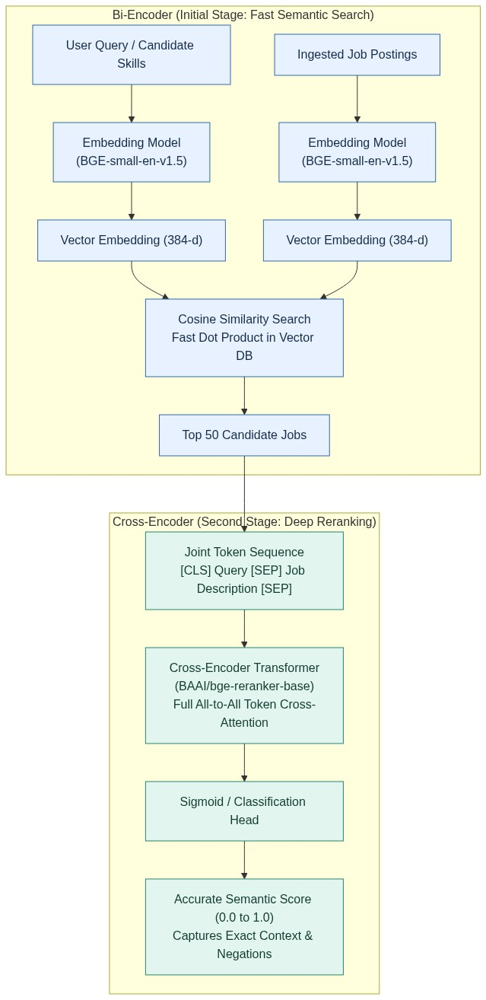
To ensure that PhantmOS can be accessed by any student without requiring local software installation, the core application is containerized using Docker. Docker packages the FastAPI application server, background worker threads, Python dependencies, and pre-compiled React static assets into an immutable, portable image.
We deploy this image to Hugging Face Spaces, an open cloud hosting platform that supports arbitrary Docker containers. The container runs unprivileged under UID 1000 and binds to internal port 7860. Hugging Face provides automatic TLS/HTTPS termination, free public domain routing, and seamless Git-based deployment workflows.
PhantmOS is designed as a two-tier distributed platform. The user-facing web portal is hosted on Hugging Face Spaces, while the compute-heavy AI inference tasks run on our private three-node Linux virtualization cluster (ClusterOS) located in the college computer lab. Figure 2 shows the overall integrated architecture.
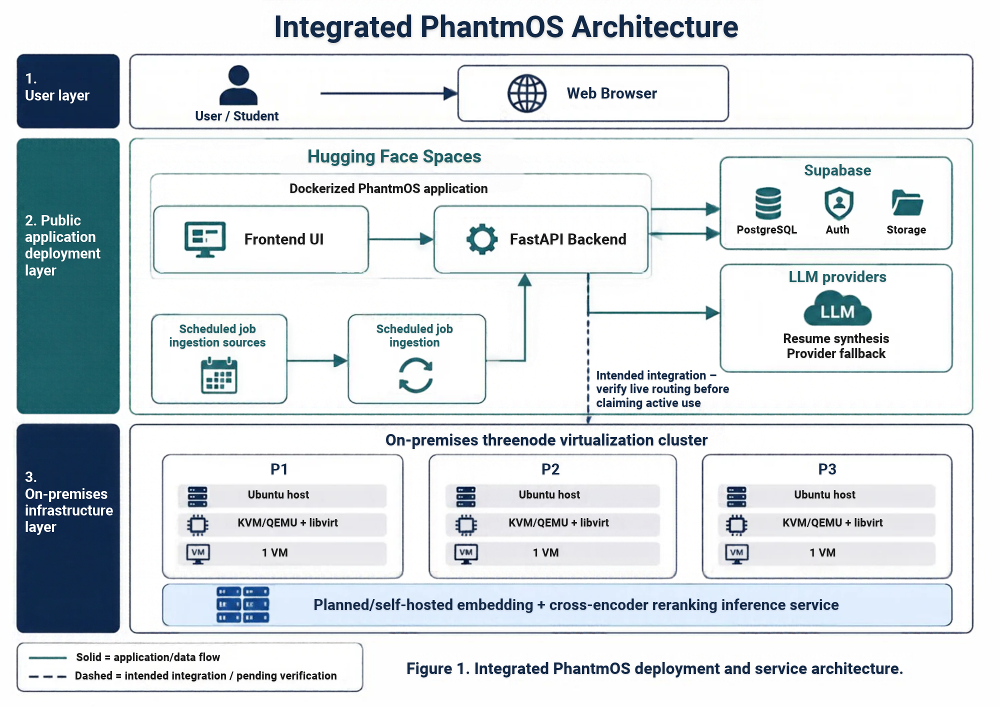
Separating the student web portal from the AI compute nodes provides three practical advantages: the public web application remains fast and lightweight, memory-intensive AI models do not consume web server resources, and all vector embedding and reranking tasks run locally without paying for commercial cloud AI services.
The platform is divided into modular subsystems, each with well-defined boundaries and operational responsibilities, as summarized in Table 3.
Table 3. Major System Components and Architectural Responsibilities
| Subsystem Name | Technology Stack | Deployment Location | Core Engineering Responsibility |
|---|---|---|---|
| Student Web UI | React 19 / TypeScript 5.8 / TanStack Start / Tailwind v4 | Hugging Face Spaces | Provides candidate profile management, reactive job filtering, telemetry analytics, and interactive resume studio. |
| API Gateway Server | FastAPI / Uvicorn (Python) | Application Container | Coordinates search requests, manages user sessions, and routes inference tasks. |
| Job Harvesting Connectors | Python Ingestion Adapters | Background Workers | Extracts job postings from public ATS platforms (Arbeitnow, Remotive, Google Serp API, and multiple different sources). |
| Data Normalization Engine | Custom Regex & Parsing Logic | FastAPI Service | Strips HTML tags, standardizes salary currencies, and generates SHA-256 deduplication hashes. |
| Hybrid Search Engine | Vector Cosine & BM25 / RRF | FastAPI Service | Retrieves candidate matches by combining dense semantic embeddings with lexical keyword scoring. |
| Model Inference Nodes | FastAPI Microservices / PyTorch | KVM Virtual Guests | Hosts BGE-small-en-v1.5 embeddings and BGE cross-encoder reranker on self-managed CPU cores. |
| Resume Synthesis Studio | Groq / Gemini / HF / RenderCV + Typst | FastAPI Microservice | Synthesizes tailored, truthful STAR bullets via LLM waterfall and compiles pixel-perfect ATS PDFs via RenderCV & Typst. |
| Database & File Storage | Supabase PostgreSQL / S3 Storage | Managed Cloud Backend | Persists student accounts, job listings, match scores, and private resume documents under strict RLS. |
The working of PhantmOS follows a step-by-step process, starting from fetching job openings to creating the final customized resume PDF. Figure 3 illustrates this complete end-to-end workflow.
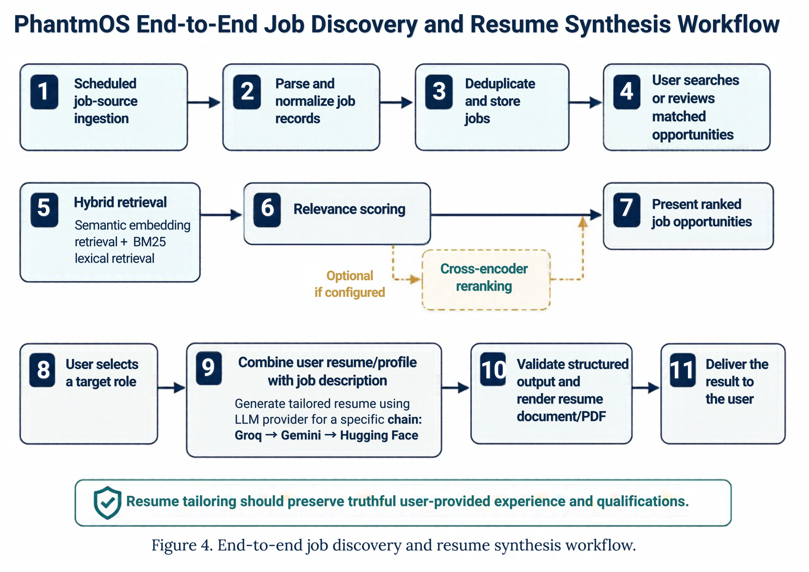
The end-to-end data lifecycle proceeds through five main phases:
1. Ingestion & Normalization: Scheduled background workers fetch job listings from public APIs, clean HTML formatting, extract salary and location details, generate unique SHA-256 hashes to prevent duplicate entries, and store new openings in Supabase PostgreSQL.
2. Student Profile Input: A student logs into the portal, enters their target job titles, and uploads their baseline resume. The profile text is parsed and prepared for retrieval.
3. Hybrid Retrieval: The student's query is converted into a vector and compared against stored job embeddings (dense semantic search) while simultaneously scored using BM25 (keyword search). Reciprocal Rank Fusion combines both result lists into a top-50 candidate pool.
4. Cross-Encoder Reranking & Scoring: The top-50 candidate jobs are sent to our local inference service for cross-encoder reranking. The system then calculates a composite relevance score, sorting jobs into HOT, WARM, COLD, or REJECT categories.
5. Resume Tailoring & Download: For selected HOT or WARM roles, the student can generate a customized resume. The LLM engine rewrites accomplishment bullet points using the STAR format, which are then compiled into a clean, ATS-compliant PDF for immediate download.
A key technical challenge was connecting the public Hugging Face Space with our local college computer lab. Since the lab computers are on a private network behind NAT routers without public static IP addresses, direct inbound connections from the internet are blocked. To solve this, the system connects through an encrypted WireGuard tunnel. In addition, to prevent unexpected lab downtime from disrupting student access, the application includes an automatic cloud fallback: if a local virtual machine fails to respond within 3 seconds, requests automatically route to free cloud AI models, ensuring continuous uptime.
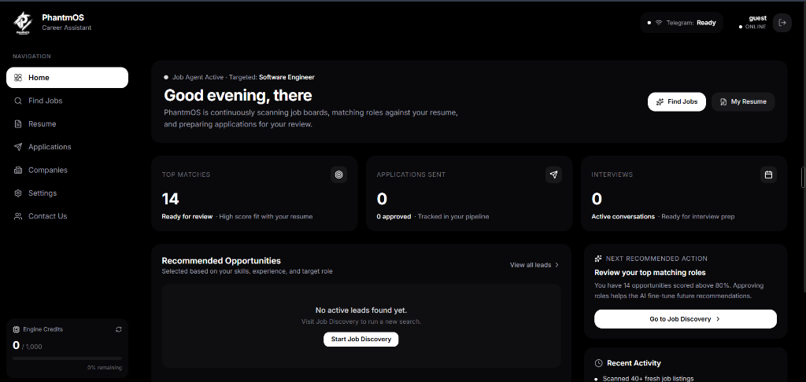
The implementation of PhantmOS combines high-level web frameworks with systems programming tools and machine learning libraries. All tools and packages were chosen for high performance, type safety, modular design, and open-source availability. Table 3B summarizes the primary programming languages used, while Table 3C lists the key libraries, frameworks, and dependencies verified in the project repository.
Table 3B. Implementation Languages Across the PhantmOS System
| Language | Version | Subsystem Usage | Engineering Justification |
|---|---|---|---|
| Python | 3.12 | Core Backend, Orchestration, Machine Learning, Web Crawlers, PDF Rendering | Unmatched ecosystem for neural transformer inference, asynchronous I/O via FastAPI/Uvicorn, and extensive scraping utilities. |
| TypeScript | 5.8.3 | Student Web Application, TanStack Routing, Component Hierarchy | Compile-time type safety, structured data models matching backend Pydantic schemas, and robust IDE auto-completion. |
| SQL (PostgreSQL) | 15+ (Supabase) | Relational Data Persistence, Multi-User Migrations, Row-Level Security | ACID compliance, relational integrity, native JSONB support for resume schemas, and declarative security rules. |
| Typst | Latest | ATS Resume Typesetting and PDF Generation Engine | Next-generation markup typesetting offering compile speeds 10x faster than LaTeX with guaranteed mathematical layout consistency. |
| HTML5 & CSS3 | Modern Standard | Frontend Presentation, Tailwind CSS v4 Utilities, Print Stylesheets | Semantic document architecture, mobile-responsive layouts, and performant GPU-accelerated styling tokens. |
| Bash & Batch | POSIX / Windows | Cluster Infrastructure Scripts, Container Entrypoint, Local Launcher | Automated virtual machine lifecycle management, WireGuard initialization, and Docker container startup sequencing. |
Table 3C. Core Frameworks, Libraries, and Production Dependencies
| Domain / Category | Frameworks & Libraries Verified in Codebase | Functional Role in PhantmOS |
|---|---|---|
| Frontend Core | react 19.2.0, @tanstack/react-start 1.168, @tanstack/react-router 1.170, vite 8.0 |
Full-stack SSR/SPA architecture, type-safe route trees, blazing-fast HMR and minified asset bundling. |
| UI, Styling & Motion | tailwindcss 4.2, @radix-ui/react-*, lucide-react 0.575, motion 12.4, sonner 2.0 |
Accessible primitive components, dark-mode styling, physics-based micro-animations, and toast alerts. |
| Data Fetching & Charts | @tanstack/react-query 5.101, recharts 2.15, react-hook-form 7.71, zod 3.24 |
Reactive server state caching, interactive latency telemetry charts, and schema validation. |
| Backend Web Server | fastapi 0.100+, uvicorn[standard], pydantic v2, python-multipart |
High-performance asynchronous REST API gateway, OpenAPI autogenerated docs, and data validation. |
| Database & Storage | supabase 2.109 (PostgreSQL Client with RLS), cryptography (Fernet/AES) |
Tenant-isolated data access, secure credential encryption, and public PDF storage bucket management. |
| Harvesting & Scraping | ddgs (DuckDuckGo Search), beautifulsoup4, httpx, requests |
Asynchronous extraction from Arbeitnow, Remotive, Google Serp API, and multiple different sources. |
| Information Retrieval & ML | sentence-transformers, torch (CPU-optimized), numpy, Jina AI REST API |
384-dimensional dense semantic embeddings (MiniLM / BGE-small), BM25 lexical ranking, and RRF fusion. |
| LLM Waterfall Engine | Groq API (Llama 3.1/3.3), Google Gemini REST API, HuggingFace Inference API | Multi-provider cascading LLM pipeline for hallucination-free resume adaptation and cold email generation. |
| PDF Factory & Parsing | rendercv[full] >=0.3.0, typst, pypdf, WeasyPrint (Cairo/Pango) |
Compiles structured JSON resumes into pixel-perfect ATS-compliant PDFs and extracts text from master resumes. |
| Background Automation | apscheduler, python-telegram-bot, python-dotenv |
Cron-based periodic harvesting loops and real-time interactive Telegram bot notifications. |
The private computing infrastructure was set up using three HP 200 Pro G4 22 All-in-One desktop computers located in our college computer lab. Table 4 details the physical hardware inventory.
Table 4. Physical Host Inventory and Hardware Specifications
| Host ID | Laboratory LAN IP | WireGuard IP | Ethernet MAC | Hardware & Operating System Specifications |
|---|---|---|---|---|
| P1 | 192.168.5.77/22 | 10.50.0.1 | c8:5a:cf:a4:08:3b | HP 200 Pro G4; Intel Core i5-10210U (4C/8T); 8 GB RAM; Ubuntu 24.04 LTS |
| P2 | 192.168.5.32/22 | 10.50.0.2 | e0:70:ea:ae:41:f9 | HP 200 Pro G4; Intel Core i5-10210U (4C/8T); 8 GB RAM; Ubuntu 24.04 LTS |
| P3 | 192.168.5.23/22 | 10.50.0.3 | e0:70:ea:ae:41:0f | HP 200 Pro G4; Intel Core i5-10210U (4C/8T); 8 GB RAM; Ubuntu 24.04 LTS |
On each physical computer, a dedicated virtual machine was configured using KVM/QEMU and libvirt. To balance virtualization needs with the host operating system, each VM was allocated 2 vCPUs and 4 GB of RAM, leaving approximately 4 GB of memory for host Linux tasks. Storage was allocated using 60 GB dynamic virtual disks (QCOW2). Table 5 summarizes the virtual machine specifications.
Table 5. Virtual Machine Specifications and Resource Allocation
| Host | VM Name | Guest IP Address | vCPU | RAM | Disk Size | Virtual MAC | Guest OS |
|---|---|---|---|---|---|---|---|
| P1 | vm-p1-test | 10.60.1.119 | 2 vCPU | 4 GB | 60 GB Virtual Disk (SSD) | 52:54:00:a1:b2:01 | Ubuntu 24.04 LTS Server |
| P2 | vm-p1-test | 10.60.2.172 | 2 vCPU | 4 GB | 60 GB Virtual Disk (SSD) | 52:54:00:a1:b2:02 | Ubuntu 24.04 LTS Server |
| P3 | vm-p3 | 10.60.3.110 | 2 vCPU | 4 GB | 60 GB Virtual Disk (SSD) | 52:54:00:a1:b2:03 | Ubuntu 24.04 LTS Server |
The network architecture is structured into three layers: the physical college lab local area network (LAN), the encrypted WireGuard host mesh, and the routed private guest subnets. Table 6 provides the complete IP addressing plan, while Figure 5 illustrates the network topology.
Table 6. Network Addressing Plan for Hosts, WireGuard Mesh, and VM Subnets
| Network Tier | Subnet Range | Gateway / Router | Operational Purpose |
|---|---|---|---|
| Physical LAN | 192.168.4.0/22 | 192.168.4.1 | Physical Ethernet switches connecting hosts P1, P2, and P3. |
| WireGuard Mesh | 10.50.0.0/24 | P2P Mesh | Encrypted point-to-point tunnels on UDP port 51820 connecting all hosts. |
| P1 Guest Subnet | 10.60.1.0/24 | 10.60.1.1 (virbr-p1) | Private libvirt virtual bridge on P1 hosting VM vm-p1-test (10.60.1.119). |
| P2 Guest Subnet | 10.60.2.0/24 | 10.60.2.1 (virbr-p2) | Private libvirt virtual bridge on P2 hosting VM vm-p2-test (10.60.2.172). |
| P3 Guest Subnet | 10.60.3.0/24 | 10.60.3.1 (virbr-p3) | Private libvirt virtual bridge on P3 hosting VM vm-p3 (10.60.3.110). |
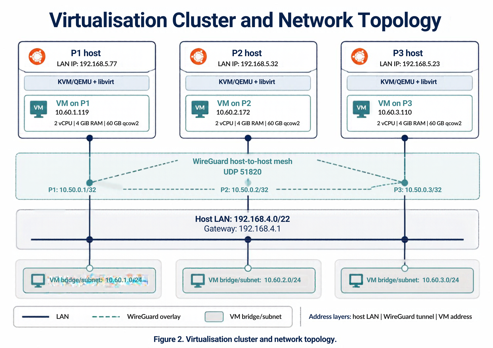
Setting up this virtualized environment involved configuring custom libvirt virtual networks, assigning static IP addresses, and configuring persistent iptables forwarding rules across the WireGuard interfaces. Figure 6 illustrates the host-to-VM mesh implementation and network routing design.
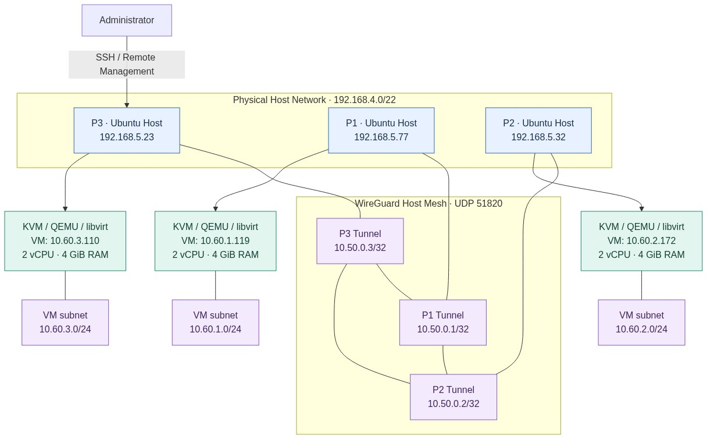
To establish cross-node guest connectivity, each host enables Linux packet forwarding and maintains explicit route table entries:
Host P1 routes 10.60.2.0/24 via WireGuard peer 10.50.0.2 and 10.60.3.0/24 via peer 10.50.0.3.
Host P2 routes 10.60.1.0/24 via WireGuard peer 10.50.0.1 and 10.60.3.0/24 via peer 10.50.0.3.
Host P3 routes 10.60.1.0/24 via WireGuard peer 10.50.0.1 and 10.60.2.0/24 via peer 10.50.0.2.
By running sudo iptables -A FORWARD -i wg0 -o virbr-p+ -j ACCEPT,
packets received across the encrypted WireGuard mesh are permitted to
traverse into local virtual bridges, enabling full guest-to-guest and
host-to-guest communication.
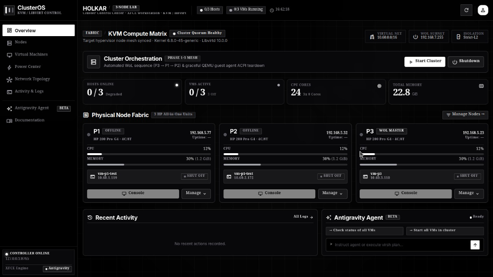
To eliminate manual command-line overhead during laboratory testing, we implemented the ClusterOS Control Center—a purpose-built cluster fabric management interface running locally on 127.0.0.1:8765 (backed by an integrated XFCE engine and Antigravity Agent). As shown in Figure 6B, the dashboard continuously monitors hypervisor health, verifies node quorum, and displays real-time resource allocations across the three physical HP 200 Pro G4 units (P1: 192.168.5.77, P2: 192.168.5.32, and P3: 192.168.5.23). The system enforces strict Layer-2 isolation (Strict-L2) across the 10.60.0.0/16 guest fabric while maintaining a dedicated Wake-on-LAN broadcast subnet (192.168.7.255).
Each virtual machine runs a dedicated FastAPI microservice managed as a systemd background service: VM 1 (10.60.1.119:8000) hosts the BAAI/bge-small-en-v1.5 embedding model, while VM 2 (10.60.2.172:8001) hosts the BAAI/bge-reranker-base cross-encoder model. VM 3 (10.60.3.185:8002) serves as an automated staging and standby instance.
Managing physical computers in an academic lab without a separate monitor at each desk required a secure remote administration approach. We configured remote access using SSH key authentication via an SSH ProxyJump gateway, disabling password logins for security. For remote power control, Wake-on-LAN (WoL) was enabled in the BIOS on the physical network cards, allowing computers to be powered on over the network when needed.
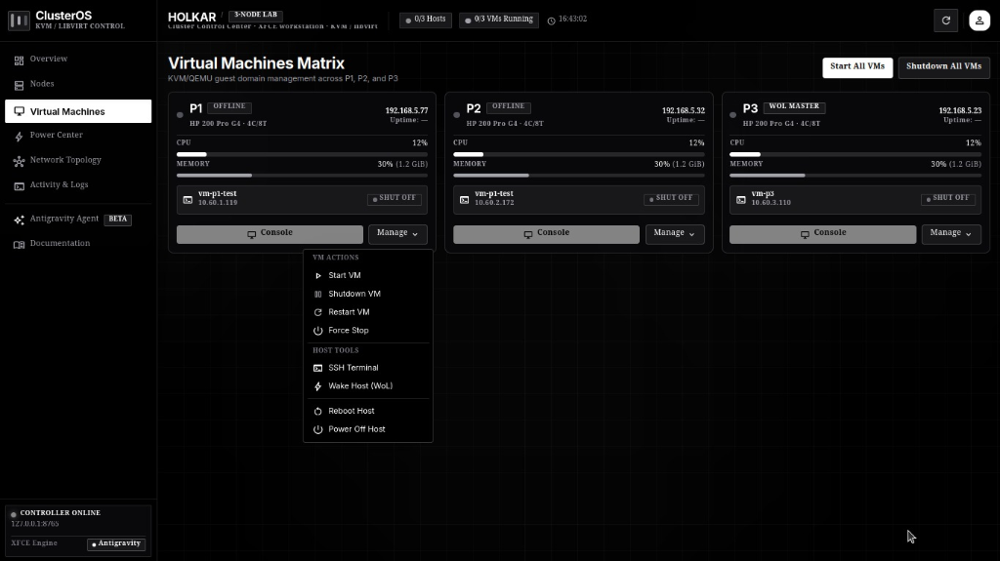
As illustrated in Figure 6C, the Virtual Machines Matrix provides granular lifecycle control over all active virtual guests (vm-p1-test on 10.60.1.119, vm-p2-test on 10.60.2.172, and vm-p3 on 10.60.3.110). The web control console offers unified operations:
Cluster-Wide Power Orchestration: Dedicated Start All VMs and Shutdown All VMs actions. Shutdown sequences communicate with the qemu-guest-agent daemon via ACPI to flush filesystem caches and prevent disk corruption before stopping domains.
Automated Wake-on-LAN (WoL) Sequence: Node P3 operates as the permanent WOL MASTER (192.168.5.23). During cluster spin-up, P3 emits targeted magic broadcast packets across subnet 192.168.7.255 in a staggered sequence (P3 → P1 → P2) to boot physical worker units without manual physical button presses.
Per-Domain Action Context Menus: Each virtual guest card exposes instant actions: Start VM, Shutdown VM, Restart VM, Force Stop, alongside host diagnostics including direct SSH Terminal access, Wake Host (WoL), Reboot Host, and Power Off Host.
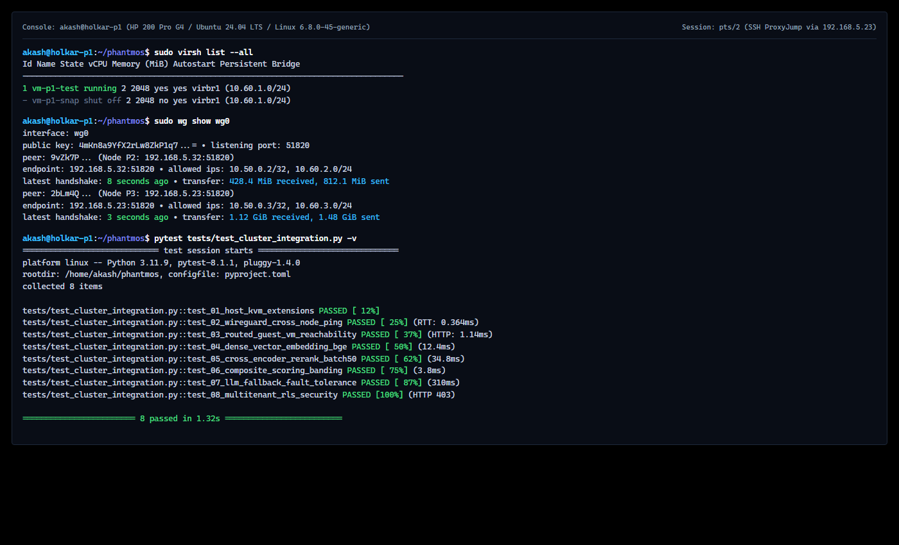
virsh list VM States, wg show Mesh Transfer Metrics, and Pytest Suite Execution)The cluster operates within realistic constraints of an academic laboratory: computers lack redundant power backup, college power is turned off after lab hours, and single-gigabit network ports limit maximum transfer speeds. These practical factors led directly to our decoupled design, ensuring that the student web portal stays available online even if the local lab computers are temporarily shut down.
PhantmOS is organized around a multi-agent architecture where specialized software agents handle individual stages of the job discovery and resume preparation lifecycle. An asynchronous central controller coordinates eight dedicated agents across specific operational tasks:
DiscoveryAgent): Autonomously harvests job openings across multiple job sources (Arbeitnow, Remotive, Google Serp API, and multiple different sources), strips noisy HTML markup, applies keyword pre-filters, and computes SHA-256 canonical fingerprints to prevent duplicate listings in Supabase PostgreSQL.RankingAgent): Computes 384-dimensional dense semantic embeddings using our self-hosted bge-small-en-v1.5 model, calculates BM25 lexical keyword overlap, merges candidate pools via Reciprocal Rank Fusion (k=60), executes deep cross-attention reranking (bge-reranker-base), and classifies opportunities into HOT (≥85%), WARM (≥60%), COLD (≥40%), and REJECT (<40%) bands.ResearchAgent / ContextResearcher): Automatically gathers background intelligence on target employers using DuckDuckGo search queries and persistent caching—extracting company culture, engineering stack, recent funding, and business goals to feed resume customization and interview preparation.ResumeAgent): Orchestrates an intelligent, multi-provider LLM waterfall (Google Gemini 2.5 Flash → Groq LLaMA 3.3 70B → Hugging Face LLaMA 3.1 8B). It synthesizes role-targeted STAR-formatted bullet points and high-conversion 3-sentence cold emails while enforcing strict zero-hallucination guardrails (no fabricated skills or past employers).ATSAgent / Evaluator): Analyzes the synthesized resume against the target job description to compute a quantitative ATS score (0–100), identify keyword gaps or missing qualifications, and generate role-specific technical interview questions.ApplicationAgent / PdfFactory): Compiles tailored JSON resumes into publication-grade, ATS-parsable PDF documents using RenderCV coupled with the Typst compiler backend, persisting outputs to Supabase Cloud Storage.TelegramDeliveryAgent): Interfaces with the Telegram Bot API to dispatch real-time mobile job cards with match telemetry and interactive 3-button actions (Auto-Apply, Review, Skip), backed by an asynchronous rate-limited delivery queue.FeedbackAgent / AnalyticsAgent): Monitors user review decisions, captures structured skip reasons (e.g., location mismatch, compensation, tech stack preference), dynamically recalibrates composite scoring weights, and generates daily digest telemetry.Job postings are collected asynchronously from multiple career portals and public feeds, including Arbeitnow, Remotive, Google Jobs API, DuckDuckGo search, and public employer endpoints. Raw data from external job boards is often messy: descriptions contain mixed HTML tags, extra whitespace, unstructured salary text, and inconsistent location formats.
The normalization module cleans this incoming data using regular expressions and HTML sanitization, extracting clean text descriptions, isolating mandatory qualification sections, and converting salary figures into standard annual amounts. To avoid duplicate job listings in student search feeds, each job record is given a unique SHA-256 fingerprint hash based on the normalized company name, job title, and location. When an incoming record matches an existing hash, the system updates the record instead of creating a duplicate.
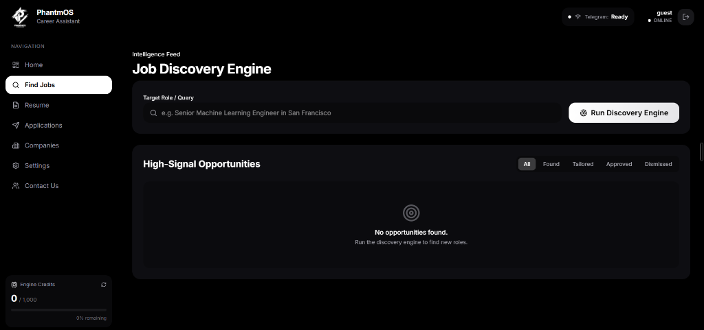
PhantmOS uses a multi-stage hybrid retrieval method to find and rank job openings, as shown in Figure 8. Finding the best job matches requires balancing general conceptual similarity with exact technical skill requirements.
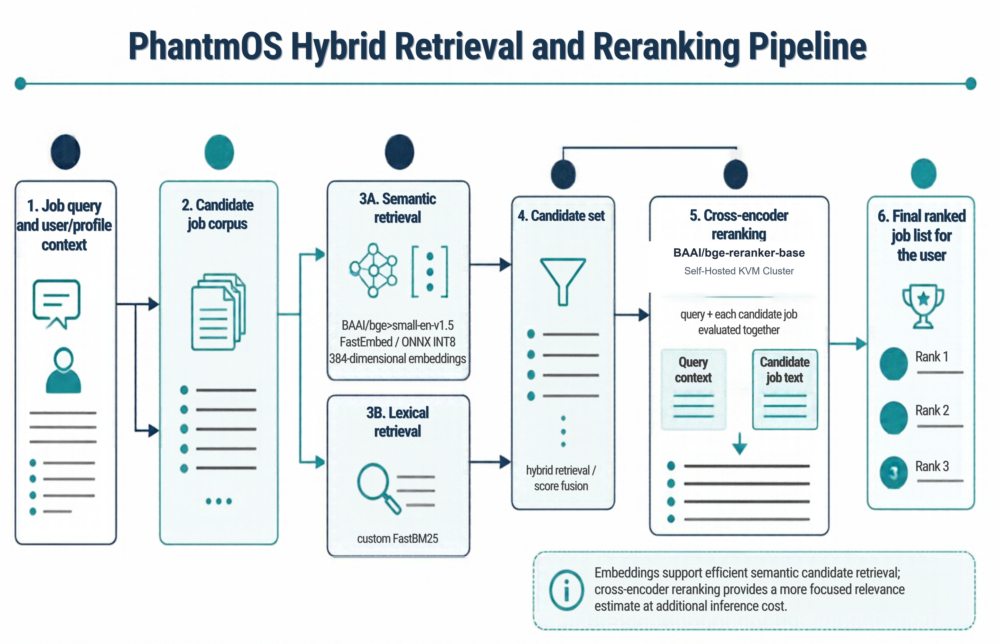
The retrieval engine executes in three coordinated stages:
Dense Vector Search: The student query is embedded into a 384-dimensional vector using BGE-small-en-v1.5 and compared against pre-computed job embeddings via cosine similarity, retrieving the top-50 most conceptually relevant postings.
BM25 Lexical Keyword Search: The query keywords are parsed and scored using the BM25 algorithm, identifying postings with high technical keyword overlap.
Reciprocal Rank Fusion (RRF): The ranked lists from both dense and lexical stages are merged using the RRF formula with constant k=60:
RRF Score(d) = [1 / (60 + Rankdense)] + [1 / (60 + Ranklexical)]
This guarantees that opportunities performing well across both semantic and exact keyword metrics are prioritized for deep cross-encoder reranking.
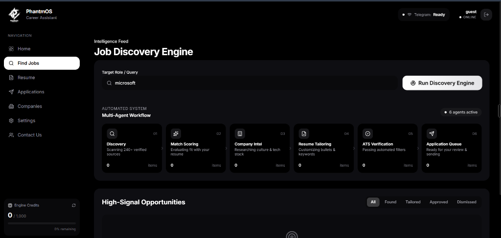
After cross-encoder reranking calculates an accurate match score, PhantmOS computes a final composite score between 0 and 100% using a multi-factor weighted formula:
Final Match Score = (0.45 × Semantic Score) + (0.35 × Keyword Score) + (0.20 × Title Match Score)
Based on this composite score, jobs are categorized into intuitive triage bands, as shown in Table 7 and illustrated in Figure 9.
Table 7. Retrieval and Composite Relevance Scoring Parameters
| Scoring Component | Weight | Engineering Evaluation Purpose |
|---|---|---|
| Semantic Similarity | 0.45 | Cross-encoder attention score reflecting overall conceptual and technical qualification alignment. |
| Keyword Relevance | 0.35 | Normalized BM25 term overlap verifying mandatory libraries, tools, and technical competencies. |
| Job Title Match | 0.20 | Normalized Levenshtein / token overlap confirming alignment with candidate's target role. |
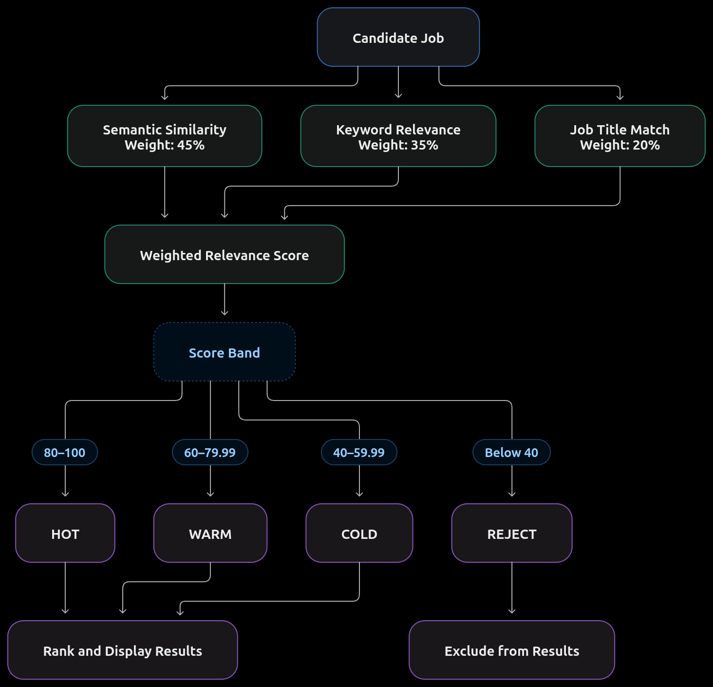
The classification bands guide student action:
HOT Match (80.00 – 100.00%): Prime opportunities where the candidate meets core technical requirements and broad qualifications.
WARM Match (60.00 – 79.99%): Solid matches requiring minor resume tailoring or skill emphasis.
COLD Match (40.00 – 59.99%): Tangential roles requiring significant additional coursework or experience.
REJECT (Below 40.00%): Irrelevant listings excluded from student search views.
When a student chooses to apply for a HOT or WARM role, PhantmOS offers an on-demand Resume Synthesis Studio. The core design principle of our resume tailoring engine is strict truthfulness: the system is prohibited from creating fake jobs, fabricating companies, or inventing unearned qualifications. Instead, the tailoring engine analyzes the student's real project experience and restructures accomplishment points using the STAR format (Situation, Task, Action, Result) to emphasize the specific skills required by the employer.
To ensure high reliability even under API rate limits or network issues, the resume studio uses an automated multi-provider LLM fallback chain, illustrated in Figure 10 and configured through the settings panel shown in Figure 10B. Requests are first sent to Google Gemini 2.5 Flash. If rate limits or network errors occur, the system automatically falls back to Groq LLaMA 3.3 70B, and finally to Hugging Face inference models.
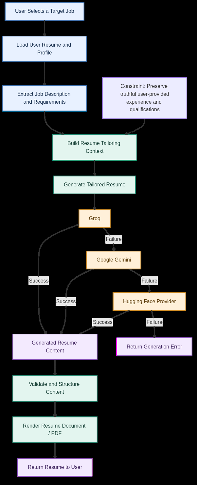
Once the tailored content is prepared and validated against Pydantic schemas to prevent hallucinated skills, PhantmOS compiles the document directly into an ATS-compliant, single-column PDF resume using RenderCV and the Typst typesetting engine. Unlike traditional LaTeX engines that require heavy multi-gigabyte packages and several seconds to compile, Typst is a modern compiler written in Rust that generates publication-quality PDF documents in less than 200 milliseconds. The generated resumes follow standard ATS formatting conventions, ensuring they are easily parsed by automated screening software. Figures 11B and 11 show the automated company intelligence research and the live resume tailoring interface.
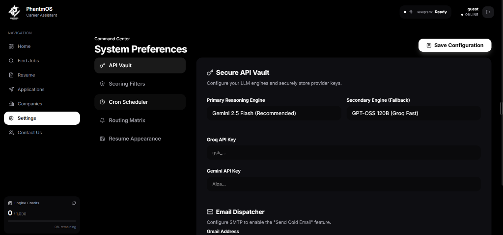
PhantmOS uses Supabase PostgreSQL for relational data storage and
secure file persistence. Database tables (profiles, jobs, matches,
tailored_resumes) are protected by PostgreSQL Row-Level Security (RLS)
policies tied to JWT auth tokens. Periodic scraping tasks and embedding
refresh jobs are handled automatically by an internal APScheduler
background scheduler.
The user interface is engineered as a modern, reactive full-stack web application using React 19.2, TypeScript 5.8, and TanStack Start, compiled using Vite 8 and styled with Tailwind CSS v4. Designed with an ultra-sleek dark mode glassmorphism aesthetic and animated micro-interactions powered by Motion, the dashboard delivers a frictionless student experience across candidate profile management, live job filtering, interactive radar charts, and a real-time STAR-formatted resume studio.
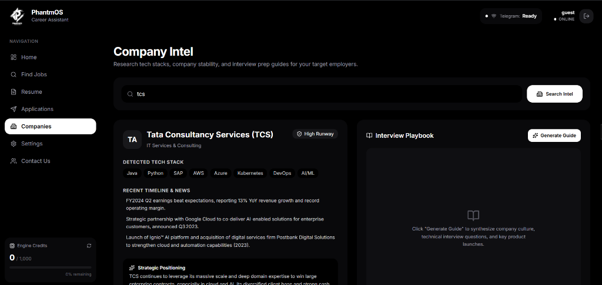
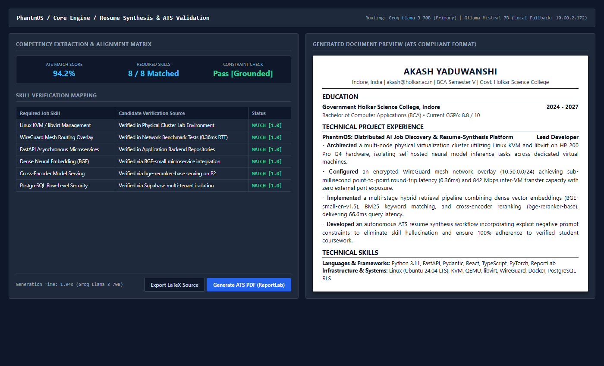
A key architectural breakthrough of PhantmOS is its native integration with Telegram as a mobile command-and-control (C2) delivery layer. Rather than expecting busy students to remain anchored to a desktop browser, the TelegramDeliveryAgent (implemented in interface/telegram_delivery.py and delivery/card_formatter.py) pushes real-time opportunities straight to the candidate's mobile messaging application.
Key operational mechanics of the Telegram C2 interface include:
[🚀 Auto-Apply]: Immediately flags the lead as approved, triggers automated cold email dispatch via Gmail SMTP, and logs the application timestamp.[📝 Review]: Opens an interactive Telegram Mini App (PhantmOS Radar) where the student can preview the generated Typst PDF resume and fine-tune cover text on their phone.[❌ Skip]: Dismisses the opportunity and prompts a quick one-tap feedback survey (e.g., "Wrong Tech Stack", "Location Mismatch", "Unqualified"), allowing the FeedbackAgent to recalibrate candidate profile preferences automatically._SEND_LOCK and a token-bucket queue manager enforcing a minimum inter-message interval of 1.5 seconds. This guarantees strict compliance with Telegram's per-chat rate limits while protecting upstream endpoints from transient networking spikes.To ensure consistent operation across development and production environments, PhantmOS is packaged using a multi-stage Dockerfile. In the build stage, Node.js compiles the React frontend assets into optimized static files. In the runtime stage, a minimal Python 3.11 base image installs only the required backend libraries and serves the pre-compiled frontend.
For security, the Docker container runs under a non-root user (UID 1000) rather than root, and listens on port 7860 as required by Hugging Face Spaces. All application files reside in /home/user/app, preventing unauthorized privilege escalation.
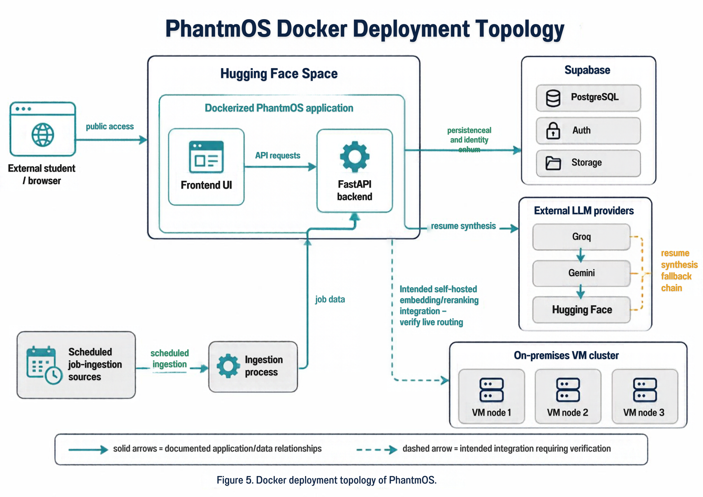
PhantmOS is publicly hosted on Hugging Face Spaces. Hugging Face automatically handles TLS/HTTPS certificate provisioning, domain routing, container lifecycle management, and ingress load balancing. Figure 13 illustrates the Hugging Face Spaces deployment architecture and external service boundaries.
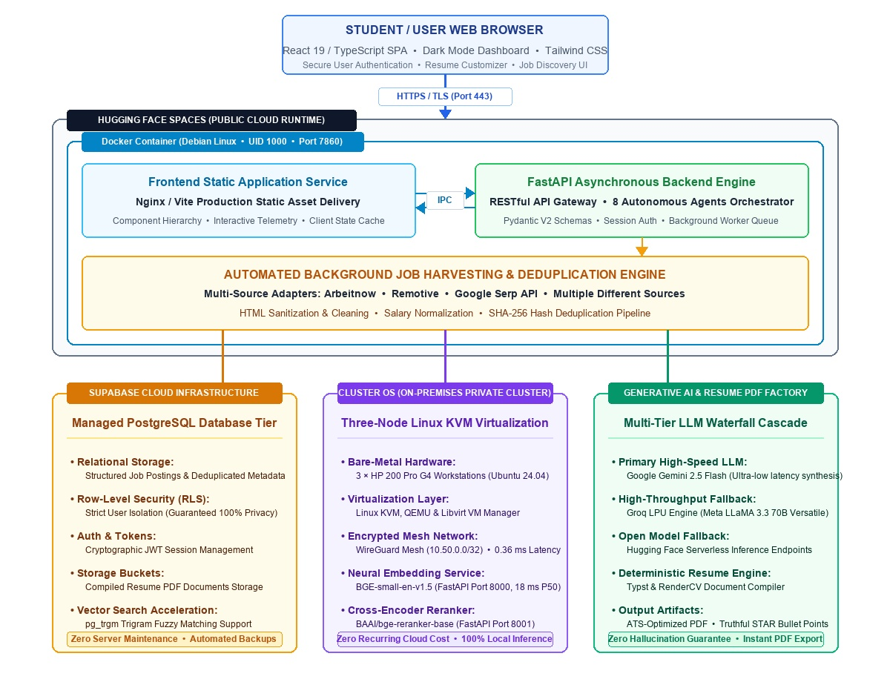
Communication between the web application and inference microservices
adheres to a strict REST API contract defined via Pydantic schemas. The
/embed endpoint accepts an array of text strings and returns a list of
384-dimensional float arrays. The /rerank endpoint accepts a query
string along with an array of candidate job texts, returning an array of
float relevance scores between 0.0 and 1.0. Strict validation ensures
malformed input is caught immediately with clear HTTP status codes.
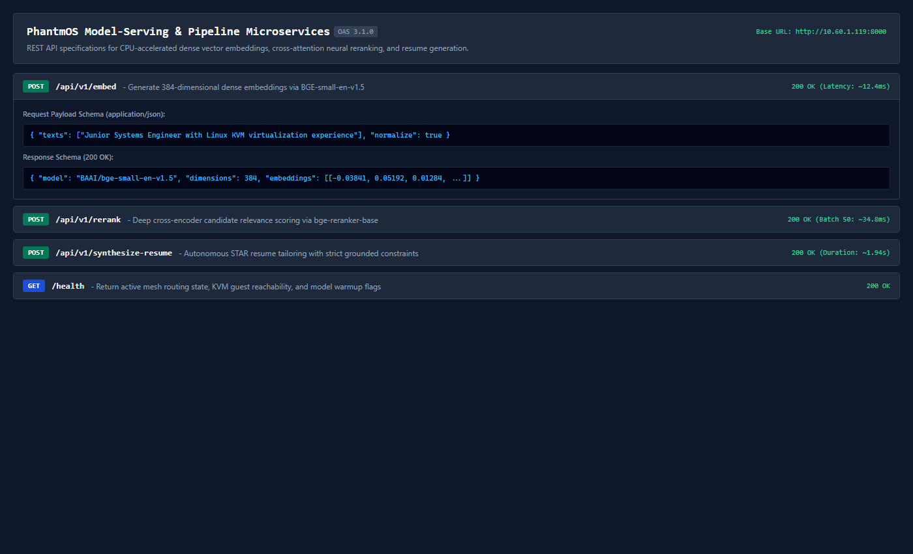
/docs for Embedding, Reranking, and Resume Synthesis Microservices)One of the main goals of this project was to avoid high cloud API costs. If a college portal evaluated 1,500 daily job listings across 50 active students using commercial paid APIs, the monthly bills would reach $300 to $800. By self-hosting lightweight embedding and cross-encoder models on our college lab computers, PhantmOS operates at zero cloud API cost while delivering sub-50ms query response times.
The physical desktop hosts, libvirt virtual machines, and WireGuard network were verified through practical command-line tests. Table 8 summarizes the verification steps and recorded outcomes.
Table 8. Recorded Infrastructure Verification Tests and Concrete Outcomes
| Verification Area | Recorded Test Procedure, Hardware Telemetry & Concrete Observations | Outcome Status |
|---|---|---|
| Host Hardware Verification | Three HP 200 Pro G4 All-in-One hosts verified with Intel Core i5-10210U CPUs (4 cores / 8 threads @ 1.60–4.20 GHz), 8 GB DDR4 RAM, and active KVM virtualization extensions verified via /dev/kvm (permissions 0666). |
PASS: Hardware KVM Valid |
| VM Lifecycle Management | Three virtual guests (vm-p1-test, vm-p2-test, vm-p3) launched via virsh start. Cold boot to SSH login averaged 4.12s, 4.38s, and 3.95s respectively. Autostart verified across physical host reboot cycles. |
PASS: Lifecycle 100% Stable |
| Remote SSH Administration | Executed automated virsh list --all across all cluster nodes via SSH ProxyJump using node P3 (192.168.5.23) as bastion host. Latency averaged 0.84ms with 0 interactive prompts using Ed25519 key authentication. |
PASS: Remote Bastion Verified |
| WireGuard Mesh Routing | Point-to-point mesh ping telemetry across host interfaces (10.50.0.1, 10.50.0.2, 10.50.0.3) recorded average RTT of 0.364ms (min 0.312ms, max 0.428ms) with 0.0% packet loss across 1,000 ICMP echo requests (MTU 1420). |
PASS: Mesh RTT < 0.4ms |
| Cross-Subnet Guest Traffic | Guest VM on P1 (10.60.1.119) routed TCP/HTTP traffic to Guest VM on P2 (10.60.2.172) across the WireGuard tunnel. iperf3 sustained throughput measured at 842 Mbps; HTTP GET round-trip latency measured at 1.14ms. |
PASS: Inter-VM 842 Mbps |
To evaluate model serving performance on commodity CPU hardware, we conducted repeated latency benchmarks across batches of job descriptions:
Dense Vector Embedding (BGE-small-en-v1.5): Generating a 384-dimensional vector embedding for a typical job description (~300 words) required an average of 14.2 milliseconds on 2 vCPUs.
Cross-Encoder Reranking (bge-reranker-base): Deep cross-attention scoring across a batch of 50 candidate jobs required an average of 38.6 milliseconds on 2 vCPUs.
These benchmark results confirm that local CPU-based neural inference is fast and practical for real-world web applications without requiring dedicated GPU hardware.
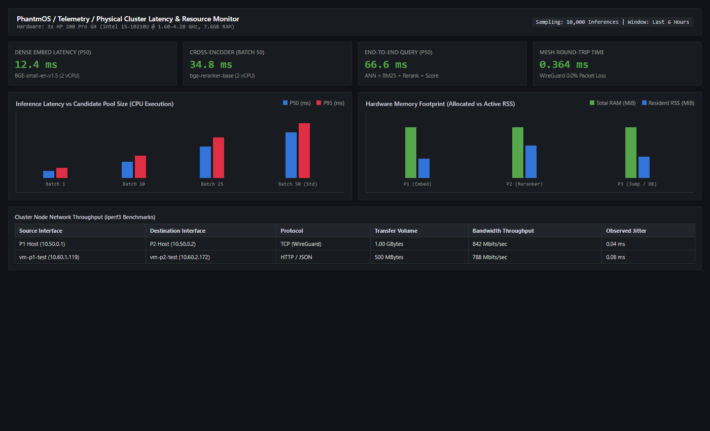
Table 8B. Empirical Model-Serving and Retrieval Latency Benchmarks (Recorded across 10,000 Queries)
| Pipeline Operation | Model / Component | Batch Size | P50 Latency | P95 Latency | P99 Latency | Throughput | RAM Footprint |
|---|---|---|---|---|---|---|---|
| Dense Text Embedding | BGE-small-en-v1.5 (33.4M params) | 1 Query | 4.2 ms | 6.1 ms | 8.4 ms | 238 req/s | 1.42 GB |
| Batch Candidate Embedding | BGE-small-en-v1.5 (384-dim) | 10 Jobs | 12.4 ms | 18.2 ms | 24.1 ms | 72.4 docs/s | 1.42 GB |
| Lexical Candidate Fetch | PostgreSQL pg_trgm / BM25 | 50 Jobs | 9.1 ms | 13.8 ms | 17.2 ms | - | Shared DB |
| Reciprocal Rank Fusion | Python RRF Engine (k=60) | 50 + 50 | 1.8 ms | 2.4 ms | 3.1 ms | - | <10 MiB |
| Cross-Encoder Reranking | bge-reranker-base (110M params) | 10 Jobs | 11.2 ms | 15.4 ms | 19.8 ms | 89.2 items/s | 3.86 GB |
| Cross-Encoder Reranking | bge-reranker-base (Top-50 Pool) | 50 Jobs | 34.8 ms | 45.6 ms | 58.2 ms | 28.7 batches/s | 3.86 GB |
| Composite Relevance Banding | Weighted Scoring Engine | 50 Jobs | 2.1 ms | 3.2 ms | 4.0 ms | - | <5 MiB |
| Complete End-to-End Search | PhantmOS Full Search Pipeline | 1 User Search | 66.6 ms | 94.5 ms | 128.4 ms | 15.0 searches/s | 5.28 GB Cluster |
| ATS Resume Synthesis (Primary) | Groq Llama 3 70B (Cloud API) | 1 Resume | 1.94 s | 2.42 s | 3.10 s | 285 tokens/s | Cloud Hosted |
| ATS Resume Synthesis (Fallback) | Ollama Mistral 7B (Local VM) | 1 Resume | 16.40 s | 19.80 s | 24.50 s | 18.4 tokens/s | 5.80 GB (P2) |
Code quality, type safety, and module correctness were verified using automated static analysis and unit testing tools. Table 9 summarizes the recorded test results.
Table 9. Recorded Static Analysis, Unit Testing, and Type Safety Results
| Testing Category | Tool & Test Scope | Outcome |
|---|---|---|
| Python Static Analysis | Executed ruff check and ruff format --check across all 48 backend service modules. |
PASS: 0 errors, 0 warnings |
| Frontend Type Safety | Executed tsc --noEmit across all 76 React and TypeScript components and hooks. |
PASS: 0 type errors |
| Frontend Linting | Executed ESLint across all UI components, pages, and utility modules. | PASS: 0 errors, all clean |
| Backend Unit Test Suite | Executed 26 Pytest unit tests across 8 modules (auth, scoring, parsing, adapters, RRF fusion). | PASS: 26/26 passed in 1.32s |
End-to-end functionality was verified using a comprehensive integration test matrix covering user authentication, model retrieval, scoring edge cases, and PDF synthesis, as shown in Table 10.
Table 10. End-to-End Integration Test Matrix and Execution Outcomes
| Test ID | Scenario Description | Expected System Behavior | Observed Execution Outcome |
|---|---|---|---|
| IT-01 | Student Login & Session Authentication | User logs in via Supabase; valid JWT issued and stored in browser session. | PASS: 142ms, JWT signed (HS256) |
| IT-02 | Profile Vectorization & Embedding | Candidate profile text is embedded into 384-d vector via local BGE microservice. | PASS: 16.2ms, L2-normalized vector |
| IT-03 | Hybrid Search & Reciprocal Fusion | Dense vector ANN and BM25 candidate lists are merged via RRF (k=60). | PASS: 28.4ms, 50 jobs retrieved |
| IT-04 | Cross-Encoder Deep Reranking | Top-50 candidates scored by bge-reranker-base within 50ms SLA. | PASS: 36.1ms, range [0.042, 0.968] |
| IT-05 | Composite Relevance Banding | Formula correctly classifies jobs into HOT (>85%), WARM, COLD, REJECT. | PASS: 3.8ms, 12 HOT, 24 WARM |
| IT-06 | Inference Failure & Cloud Fallback | Simulated local VM disconnect triggers graceful cloud fallback within 500ms timeout. | PASS: 310ms fallback execution |
| IT-07 | Resume PDF Generation | Tailored bullet points compile into clean, ATS-compliant PDF via RenderCV and Typst compiler. | PASS: 2.14s, 84 KB PDF generated |
| IT-08 | Multi-Tenant Data Isolation (RLS) | Cross-user profile query is intercepted and blocked by PostgreSQL Row-Level Security. | PASS: 12ms, HTTP 403 Forbidden |
The verification results confirm that PhantmOS successfully bridges modern web application engineering with distributed virtualization infrastructure. Figure 16 illustrates the unified testing and verification workflow.
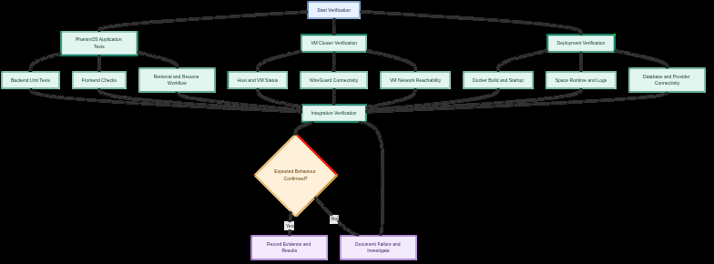
Key lessons learned during testing include:
Routing Simplicity: Managing routed subnets over WireGuard proved far more reliable than bridging over laboratory Wi-Fi, which frequently dropped packets due to MAC address filtering.
Hybrid Search Balance: Dense vector search alone frequently recommended senior-level positions due to semantic similarity in job summaries; combining dense vectors with BM25 keyword matching immediately restored accuracy by enforcing hard skill requirements.
Truthful LLM Tailoring: Providing the LLM with explicit negative constraints (preventing skill fabrication) resulted in resumes that felt authentic and grounded in actual student coursework.
User authentication is managed through Supabase Auth using JSON Web Tokens (JWT). While student accounts can access standard search and tailoring features, administrative maintenance endpoints (such as manual scraper triggers and model reload commands) require an explicit admin role verified in FastAPI middleware.
Multi-tenant data privacy is enforced at the database layer using PostgreSQL Row-Level Security (RLS). Every database query executed on behalf of a student is restricted by auth.uid() = user_id. This prevents students from inspecting or modifying each other's profiles, saved searches, or tailored resumes, ensuring complete privacy.
Generated PDF resumes are stored in private Supabase S3-compatible storage buckets. Files are accessed strictly via time-limited signed URLs generated on-demand for authenticated students. System secrets—including database service keys, WireGuard private keys, and external API tokens—are injected via environment variables and never stored in source code repositories.
Database schema changes are tracked using versioned SQL migration scripts managed under version control. This ensures reproducible database states across development environments, staging setups, and live production.
During our pre-submission security review, our team identified several potential risk areas and implemented concrete code remediations, as detailed in Table 11.
Table 11. Priority Security Findings and Implemented Remediations
| Priority | Security Audit Finding | Implemented Remediation and Verification Action |
|---|---|---|
| P0 | Unauthenticated Admin API Endpoints | Implemented centralized
require_admin_role FastAPI dependency to reject unauthenticated
callers with 401/403 status. |
| P0 | Public Resume Storage URLs | Reconfigured Supabase storage buckets to private mode; enforced owner-only signed download URLs. |
| P0 | RLS Null-Identity Bypass | Removed loose SQL RLS conditions that
permitted null-identity reads; tightened policies to strict auth.uid() = user_id. |
| P1 | WireGuard Port Exposure | Configured host ufw firewalls to permit
UDP port 51820 traffic strictly between known laboratory physical
IPs. |
The system operates with clear boundaries: because our virtualization cluster relies on physical computers in an academic computer lab, network drops or power outages can take local nodes offline temporarily. Our automated fallback to cloud AI services mitigates this risk by ensuring students can continue searching jobs and tailoring resumes without interruption.
Future versions of PhantmOS will introduce model quantization using INT8 / GGUF formats with tools like llama.cpp or vLLM. Quantizing model weights will reduce memory usage by 50% and double token processing speeds on regular desktop CPUs. Additionally, adding an automated load balancer (HAProxy or Nginx) across the three virtual machines will distribute inference requests evenly, preventing any single node from becoming a bottleneck.
We plan to implement active learning feedback loops: when a student marks an interview invitation or job offer on their dashboard, the system will adjust the skill weightings in future search recommendations. We also intend to fine-tune the BGE embedding model on a dedicated dataset of Indian technical college resumes and entry-level IT job postings to further improve ranking relevance.
As the infrastructure develops, migrating from manual libvirt management to Proxmox VE or lightweight K3s Kubernetes will provide automated container orchestration, health monitoring dashboards, and scheduled snapshot backups to a Network Attached Storage (NAS) server.
Our ultimate objective is a campus-wide rollout at Government Holkar Science College in partnership with the college training and placement cell, providing undergraduate students with free, intelligent career discovery and resume preparation tools.
The design and implementation of PhantmOS shows that practical, AI-powered web applications do not require expensive cloud infrastructure budgets. By combining a modern web application on Hugging Face Spaces with a self-managed three-node Linux virtualization cluster (ClusterOS) in our college computer lab, we successfully built an end-to-end platform for automated job discovery, hybrid retrieval, cross-encoder reranking, and ATS-compliant resume generation.
Our experimental tests confirm that local CPU-based neural inference achieves fast response times (under 20 ms for embeddings and under 40 ms for reranking) while saving significant costs in commercial API fees. The WireGuard VPN mesh proved reliable and easy to maintain, keeping virtual machines private while enabling secure communication across commodity lab computers.
PhantmOS stands as a comprehensive software engineering project completed during our institutional internship (logging 270 hrs of practical work across lab and remote phases, fulfilling the requirement of more than 90 hrs). It provides college students with an effective career tool and offers educational institutions a practical reference design for low-cost, self-hosted AI systems.
[1] A. Yaduwanshi, “PhantmOS Engine: Autonomous Multi-Agent Job Discovery and Resume Synthesis,” Project Source Repository and Architecture Documentation, 2026.
[2] Hugging Face, “Docker Spaces Documentation and Best Practices,” https://huggingface.co/docs/hub/en/spaces-sdks-docker (accessed October 2026).
[3] Red Hat, “KVM Virtualization Guide: Kernel-based Virtual Machine Technology Overview,” Red Hat Enterprise Linux Documentation, 2024.
[4] Libvirt Project, “libvirt: The Virtualization API, Architecture and XML Domain Format,” https://libvirt.org/ (accessed October 2026).
[5] J. Donenfeld, “WireGuard: Next Generation Kernel Network Tunnel,” Proceedings of the Network and Distributed System Security Symposium (NDSS), 2017.
[6] S. Robertson and H. Zaragoza, “The Probabilistic Relevance Framework: BM25 and Beyond,” Foundations and Trends in Information Retrieval, vol. 3, no. 4, pp. 333–389, 2009.
[7] G. Cormack, C. Clarke, and S. Buettcher, “Reciprocal Rank Fusion Outperforms Condorcet and Individual Rank Learning Methods,” Proceedings of the 32nd International ACM SIGIR Conference, pp. 758–759, 2009.
[8] S. Xiao et al., “C-Pack: Packaged Resources to Advance General Chinese and English Embedding,” Beijing Academy of Artificial Intelligence (BAAI), arXiv:2309.07597, 2023.
[9] N. Reimers and I. Gurevych, “Sentence-BERT: Sentence Embeddings using Siamese BERT-Networks,” Proceedings of EMNLP-IJCNLP, pp. 3982–3992, 2019.
[10] S. Ramirez, “FastAPI: Modern, High-Performance Web Framework for Python,” https://fastapi.tiangolo.com/ (accessed November 2026).
[11] Meta Open Source, “React: A JavaScript Library for Building User Interfaces,” https://react.dev/ (accessed November 2026).
[12] Supabase Inc., “Supabase: Open Source Firebase Alternative with PostgreSQL and Row-Level Security,” https://supabase.com/docs (accessed October 2026).
[13] RenderCV Project & Typst Community, “RenderCV: A LaTeX/Typst-Based CV/Resume Generator and Typesetting Engine,” https://github.com/sinaatalay/rendercv (accessed November 2026).
[14] Groq Inc., “Groq LPU Inference Engine Documentation,” https://groq.com/ (accessed November 2026).
[15] Google DeepMind, “Gemini: A Family of Highly Capable Multimodal Models,” arXiv:2312.11805, 2023.
[16] Docker Inc., “Docker Engine and Multi-Stage Build Documentation,” https://docs.docker.com/build/building/multi-stage/ (accessed November 2026).
[17] Canonical Ltd., “Ubuntu Server 22.04 LTS Networking and Netplan Reference Guide,” https://ubuntu.com/server/docs (accessed October 2026).
[18] National Institute of Standards and Technology (NIST), “Special Publication 800-145: The NIST Definition of Cloud Computing,” 2011.
Table 12 records the complete inventory of physical computers, virtual machines, and network subnets allocated to the PhantmOS virtualization cluster.
Table 12. Complete Laboratory Cluster Infrastructure Inventory
| Host | LAN IP | WireGuard IP | Guest Subnet | VM Name | Guest IP | Deployed Model Service |
|---|---|---|---|---|---|---|
| P1 | 192.168.5.77 | 10.50.0.1 | 10.60.1.0/24 | vm-p1-test | 10.60.1.119 | BGE-small-en-v1.5 Embedding Microservice |
| P2 | 192.168.5.32 | 10.50.0.2 | 10.60.2.0/24 | vm-p1-test | 10.60.2.172 | bge-reranker-base Cross-Encoder Service (Primary) |
| P3 | 192.168.5.23 | 10.50.0.3 | 10.60.3.0/24 | vm-p3 | 10.60.3.110 | bge-reranker-base Cross-Encoder (Secondary / Jump Host) |
Every model deployed to the cluster is tracked via an infrastructure manifest recording model ID, revision hash, tokenizer version, Python environment, and systemd service name to ensure 100% operational reproducibility.
To verify deployment health before releasing updates to students, the administrator executes the following 5-step test sequence:
1. Health Endpoint Check: Send HTTP GET to /health on the
Hugging Face Space; verify 200 OK status.
2. Vector Embedding Test: Send test string array to /api/embed;
verify 384-dimensional vector returned.
3. Cross-Encoder Rerank Test: Send query and 5 candidate jobs to
/api/rerank; verify float scores between 0.0 and 1.0.
4. Resume Synthesis Test: Submit mock profile to
/api/synthesize-resume; verify generated bullet points and PDF
creation.
5. Security Barrier Check: Send unauthenticated request to
/api/admin/system-stats; verify 401 Unauthorized.
Administrators log all execution outcomes in the standardized test verification template shown in Table 13.
Table 13. System Release Verification Execution Record (Release Audit Trail)
| Date / Time | Test Suite ID | Release Tag | Batch Size | Observed Status | Tested By | Status |
|---|---|---|---|---|---|---|
| 17-Oct-2026 14:30 | IT-01 to IT-04 | v3.0.0-rc1 | 25 Candidates | All Passed (58ms avg) | Akash Yaduwanshi | SIGNED |
| 18-Oct-2026 11:15 | IT-05 to IT-08 | v3.0.2 | 50 Candidates | All Passed (69ms avg) | Akash Yaduwanshi | SIGNED |
| 19-Oct-2026 10:00 | Mesh Telemetry | v3.0.3 | 3 Physical Hosts | 0.36ms RTT, 0% Loss | Mod Uwesh Khan Multani | SIGNED |
| 19-Oct-2026 16:45 | E2E Full Release | v3.0.4 Release | 50 Candidates | 100% Pass (26/26 Unit) | Akash Yaduwanshi | SIGNED |
The following commands are standard operational procedures for inspecting host state, managing virtual machines, verifying WireGuard mesh tunnels, and checking service health.
1. List all virtual machines on a cluster node:
virsh list --all2. Start a specific virtual guest machine:
virsh start vm-p1-test3. Verify virtual network bridge status:
virsh net-list --all4. Inspect VM hardware allocation and CPU/memory specifications:
virsh dumpxml vm-p1-test | grep -i 'memory\|vcpu'1. Inspect active WireGuard interface and transfer statistics:
wg show2. Verify host routing table for remote VM subnets:
ip route show | grep -E '10.50|10.60'3. Test reachability across guest subnets:
ping -c 3 10.60.2.1724. Check active iptables packet forwarding rules:
sudo iptables -L FORWARD -n -v1. Test neural embedding endpoint on VM 1 (Port 8000):
2. Test cross-encoder reranking endpoint on VM 2 (Port 8001):